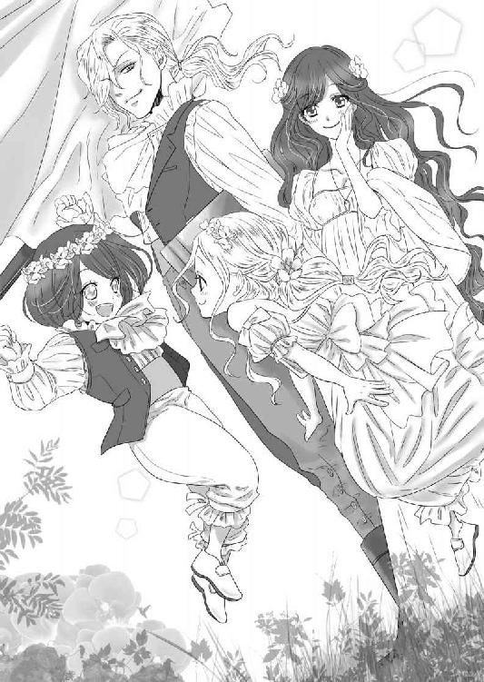

| 狐憑き公爵に夜ごと淫らに愛されて (LUNA文庫) | |
| 深森 ゆうか | |
| 天海社／LUNA文庫 (2018) | |
狐憑き公爵に夜ごと淫らに愛されて
著者：深森ゆうか
イラスト：ｎｉｒａ．
第一章
「深窓の令嬢」
いい意味で使われていれば――一年を通して芳しい花達に囲まれ、ひっそりと育てられた花よりも美しい一輪の花。
冷えた外気に触れれば、たちまちその輝きを失って萎れてしまう温室の中でしか生きていけない――そんなか弱く、可憐な令嬢。
悪い意味で使われれば――人付き合いも苦手。屋敷から出るのも嫌い。部屋でゴロゴロしながら自分の好きなことをしているのが超至福！
人に会わなければ、お洒落も必要ない。お風呂だって毎日、入らなくてもよい。
自分の趣味に生き、だらけきった生活を送る――引きこもり令嬢。
エディス・アポット侯爵令嬢（二十歳）は、後者の方だった......。
そんな「引きこもり」令嬢のエディスに、初めての見合いの話が舞い込んできて、本日はその日であった。
お相手はブレント・バークレイ公爵。若くして跡目を継いだ金髪碧眼の、眉目秀麗の若者である。
その地位、財産、そして容姿――どれをとっても秀でているのに、二十八という歳になっても結婚どころか、浮いた話さえ出てこない。
それは――まことしやかな「ある」噂が原因であった。
その噂のせいかバークレイ公爵は、いつも眉間に皺を寄せて端整な顔に苦悩の表情を浮かべている。
それさえも絵になると乙女達は悩ましく息を吐くのだが、誰も彼の苦痛を聞こうと近づくことをしない。公爵の心を掴んでやろうとする者など、一人もいないのだ。
ただ、彼を遠目に見ているだけ。
それも仕方のないことだ。何せ噂は噂ではないのだから。
度々起こる公爵の発作を見ている者がいて、それは真実だと皆が思っている。
「地位も財産もお顔もよいのだけれど......夫婦として一生のお付き合いは、無理だわ」
「下手に近づいて、花嫁候補にされたら怖いもの」
と、乙女達は囁き、観賞対象としか公爵を見ていなかった。
貴族の令嬢達には「結婚相手対象外」と見られているのだ。
仕方がない。彼の発作は正気の沙汰ではなく、端から見たら狂人としか思えない。
なので、いくらバークレイ家から見合いの話を持っていっても、体よく断られるばかり。
――だが、一件だけこの見合いを承諾した貴族の家があった。
それがアポット家――エディスの家だ。
そうして「いやいや」と渋るエディスに、両親はメイド総出で支度をさせて、馬車にぶち込んで、バークレイ公爵家のサロン内で見合いの最中にそれは起きた。
――エディスは、ポカンと大きく口を開けてその光景を眺めていた。
通常なら年頃の娘がはしたない、と母に叱られるところだが今は、その母でさえ一緒になって大口を開けたままだ。
そして父はというと、
「公爵！ バークレイ公爵！ 落ち着かれよ！」
と、公爵を落ち着かせるために、必死に声かけをしている。
時々「どうどう」と馬でも宥めるように公爵に話しかけているところを見ると、父も混乱しているに違いない。
それは仕方ない、とエディスも思う。
自分だって彼が近づいてきたら、きっと「よしよし」と宥めようとするだろう。
けれど、この渦中のど真ん中に入る気には、とてもなれない。
とにかく混乱が落ち着くまで、蚊帳の外で傍観していた方がいい――そう判断するしかない状況である。
メイド達の絶叫と、執事以下使用人達の、公爵を引き止めようとする懸命な声。
そして食器が床に落ちて割れたり、椅子やテーブルが倒れたりする音。
騒がしいと、笑っていられる程度ではない。
しかもその騒ぎを起こしている張本人こそ、このバークレイ公爵家の当主――ブレントなのだから。
「自分の家の物だから、盛大に壊している......わけかしら？」
いいように取ろうとエディスの母が話しかけてくるが、頬が引きつっている。
対して、エディスは冷静に答えた。
「例の、ご病気が出たんでしょう？『狐憑き』と言われる症状が」
「エディス、貴女知っていたの？ 引きこもりで社交界どころか、お茶会にさえ出席しないのに」
相当驚いたのか。そんな母にエディスは、呆れたような眼差しを向ける。
「我が屋敷でのお茶会が姦しいのよ。私の部屋にまで聞こえているわ。嫌でも世間の噂が耳に入ってくるわ。――もちろん、私の噂もね」
「あら嫌だわ......。レディが、聞き耳を立てるものではありません」
「聞かれたくなかったら、お声を小さくしてお話ししてください。笑い声が起きる度に庭の鳥達が驚いて飛び去っていくのだから」
（自分達の声量を反省するより、聞こえた方を注意するってどうなの？）
エディスは、嫌みをこめて母にそう進言するも、本人はどこ吹く風だ。
というか、聞こえなかったフリをされた。そこはさすが、社交界を渡り歩いてきた母である。
「深窓」と、聞こえはいいが実は「引きこもり」の娘を持つ母である。
『都合の悪いことは聞かない、聞いていない』――母の常識でもあるし、社交界の常識でもある。
「――!?」
騒ぎが沈静するまで壁の花になる決意をしていた二人だったが、そんな二人に狙いを定めてきたようにバークレイ公爵――ブレントの眼差しが、きらりと光った。
――標的にされた！
母はススス、と壁に背中を貼りつけたように横へ逃げていく。
エディスも同じように壁に背中を貼りつけ、母とは反対方向へ移動する。
それによって母とエディス、どちらが狙われたのか明確になった。
（わ、私だわ......！）
若い娘の方がよかったのか、ブレントはテーブルからピョンと降りると一直線にエディスに向かって駆けてくる――手足を床につけ、獣のように四つん這いで。
それは野生の獣のようにしなやかに駆けてきて、エディスは一瞬、見惚れてしまった。
（なんて美しいの......）
絵に、絵に残しておきたい......！
全裸だったら、筋肉の流動までしっかりと記憶して描いておけるのに......！
思わずブレントの動きの一つ一つを、この目に焼きつけておきたいという欲求に駆られ、エディスは足を止めてしまった。
言葉通り獣と化しているブレントは、立派な体躯の青年だ。
そしてエディスは、引きこもり、体力やら筋力やら乏しいだろうという、云々を置いておいても、か弱い女性である。
「ケーーーーン！」
そう高らかに声を上げながら飛び込んできたブレントに倒され、押し潰された。
「――うっ、ちょっ、ちょっ......ぶっ!?」
湿り気のある生温かさを顔全体に感じて、エディスは言葉を失う。
――私、顔を舐められてない？
そう、感じたがエディスは、頭をしこまた打って気を失ってしまったのだった。
（......ああ、私、ベロンチョされている......）
と思いながら......。
◇◇◇◇◇
「お父様、お母様。私、バークレイ公爵家に嫁ぎます」
「――えっ？」
エディスの言葉に、父と母の声が見事にハモった。あの、お見合いの騒動から一週間が経っている。
気を失ったエディスは、すぐさま医師に診てもらい意識を取り戻した。
この状況では、とてもお見合いを続けられないと中止になったのだが、エディスの両親は断りをいれようと心に決めていた。
やはり「狐憑き」だと身を持って知ったし、それに「引きこもり」でも可愛い一人娘だ。
悲惨な夫婦生活になると目に見えた。
身分は「侯爵」ゆえ、こちらから断りをいれたら「公爵としての矜持を踏みにじるのか」とブレントの機嫌を損なう問題があるが、そこは見合いの騒動を盾にすれば、すんなりいくのではないか？ という意見に、両親は腹を決めたのだ。
そんな両親の、子を思う気持ちを無駄にしたエディスの一言に、しばらくダイニングに静寂が漂う。
「......聞いていいかね？」
「はい」
父が咳払いを一つして、厳かに娘に尋ねる。
「あのお見合いの日の騒動を、覚えているかい？」
「ええ、覚えています。はっきりくっきりと。たとえそこで頭をぶつけて失神していたとしても、あれは記憶違いではないと、はっきりとこの目に焼きついております」
「覚えていてどうして『結婚する』と言えるんだ!? エディス、お前大丈夫か？」
冷静に言い切る娘に父は逆上して、思わず椅子から立ち上がってしまった。勢いよく立ち上がってしまった拍子に、テーブルに載せられていた朝食が皿ごと跳ね上がる。
「エディス。貴女、やっぱりおかしいわ。打ちどころが悪かったのよ、すぐにウィンズ医師に来ていただきましょう」
さすがの母も心配して、執事を呼ぶために呼び鈴を鳴らす。
二人とも、ありありと動揺している。
対してエディスは、やはり冷静な態度で悠然と朝の紅茶を口にしていた。
「お父様、お母様。聞いて。これは自分なりによく考えたことなの」
「しかしな......」
「よく考えてって、何を考えたの？ 世間知らずのお前がそんなことを言ったところで、納得できる説明を私達にできるというの？」
「世間知らずでも説明くらいはできるわよ。まず私は、お父様とお母様が思うより、神経が図太くできてます」
「......まあ、そう、ね......。どんなに口を酸っぱくして言っても社交界に顔を出さなかったし、我が家のお茶会のときでも、どんなに嫌みを言われようが素知らぬフリをしていたし」
家柄から、または事業で、気に入らない相手でも表面上は仲良くしなくてはならないのが社交界で、貴族社会だ。
自分の娘ながらに、肝が据わっていると母は感じていた。
「神経が図太くたって、毎日のように顔を合わせて生活しなくてはならないのだぞ？ あのときのように暴れて手がつけられないバークレイ公爵を今度はエディス、お前が抑えなくてはならなくなるのだぞ？」
「そんなこと、大した問題ではありません」
父が危惧していることを口にした。どんなに変わり者で引きこもりでも可愛い娘――やはり、嫁ぎ先で苦労はさせたくないという心情が顔に表れている。
そんな父に対してもエディスは「大した問題ではない」と言い切った。
「お父様、お母様、私にとって『問題』なのは、ああいう公の場で唇を奪われたことなんです」
娘の言葉に、両親は肩を強張らせた。
「――あ、あれは......！」
「あれは事故、そう事故だ！ 気にすることはないぞ、エディス」
そう言いながら笑顔を繕うが、唇の端が引きつっている。
そんな両親にかまわず、エディスは話を続ける。
「しかも、『ディープ』でしたよね？ 舌の感覚が残っておりますから」
「顔をベロベロ舐められただけで、決してそんな艶めいた意味ではありませんよ！ あれは！」
そう、単に獣に取り憑かれ中のバークレイ公爵が、その野生そのままにエディスの顔をベロンチョしていたのかもしれない。
正気に戻った公爵が、そのことを覚えているかどうかなんて分からない。
――しかし。
「周囲は見ていましたから。お見合いの仲介人であるエルロイド伯爵夫人もいらっしゃいました。メイド達も騒いでおりましたけれど、しかとその様子を見ていたはずです、『ベロンチョ』」
エディスだとて『ベロンチョ』なんて、年頃の乙女が口にするのは躊躇う。人前で下品な言葉など使いたくない。
――いや、どちらかと言えば、平気で使える乙女に分類できるが。
だからといってこんな言葉を使うのは両親の前か、何か勝負を賭けるときの有効な手段の一つとしてだ。
今、この場面こそ勝負のとき。
「これでもアポット侯爵の娘です。たとえ引きこもりで創作や絵画に、暇さえあればゴロゴロしていようが。そのアポット侯爵家の娘が、公衆の面前で襲われたのですよ？ しかも熱い抱擁と口づけをされました。これはもう社交界では大事でしょう？ 貴族社会からいっても、このままこちらから破談にしたら名誉に関わることではありませんか？」
現にバークレイ公爵の方から、縁談を断る連絡はこない。
今まできたのは、自分の体調を気遣う手紙と贈り物ばかり。これは、向こうから断る気はないという意思の表れだろう。
「このまま断ったら、もう私に求婚する殿方――というより、貴族の家はないと思われます。『あのバークレイ公爵家のお手つきの娘に手を出したら、何が起きるか分からない』と噂するでしょう」
「うう......」
父も母も唸るだけで、反論のしようがないらしい。気難しく眉間に皺を寄せて、互いの顔を見合わせる。
「私は、公爵様のもとに嫁ぐ覚悟はできております。ご心配には及びません」
「......エディス、我が儘で引きこもっていたかと思っていたが......もう立派な淑女だったのだな」
父がしんみりとした声をこぼすと、母もそれに続いて頷きながら言った。
「本当に......。子供だから、引きこもってだらしない生活をするのも、仕方ないと思っていましたけど......杞憂でしたのね」
二人、目頭に熱いものが生まれたのか、ナフキンでしきりに拭っている。
「もちろんです。ここで断っては、いずれバークレイ家と摩擦が起きかねませんから。アポット家存続のためにも私は、この身を捧げましょう」
「よくぞ言った！」
「それこそ貴族の令嬢としての心構えですよ！ エディス！」
感激を身体全体で表現している両親。エディスは、ぽつりと呟く。
「――いえいえ、こんな美味しい話を断るなんて勿体なくて」
「えっ？」
「エディス？」
「いいえ、気の持ちようですから。美味しい生活になるよう頑張りますと、言ったのです」
――ええ、本当に美味しい生活になりそう。
エディスは思う。
狐憑きのバークレイ公爵。名前はブレント。
バークレイ家は代々、森林の広がる緑豊かで広大な領地に狐を放ち育て、毎年シーズンになると「狐狩り」を楽しんでいた。
それは、ブレントの父の代で最盛期を迎えたらしい。
「狐狩り狂い」とまで言われたブレントの父と同じ血を引くブレントもまた、狐狩り狂いだった。
まだ少年だったブレントは、父が盛大に開いた狐狩りに参加。
そこで――失態を起こした。
まだ、小さな子供の狐まで狩ってしまったのだ。
「狩りに子供も大人もない。狩れるなら狩る。それが勝負の世界だ」
「こんなに広い領地だもの。子狐の一匹や二匹狩っても減りやしない」
と、少年のブレントは悠然と言い放ったという。
高い地位をもつ貴族の傲慢な一面が、はっきりと表れた日――その日を境にブレントはときたま、狐に取り憑かれたような行動を起こすようになる。
上品に食事をとっていたかと思ったら突然、ナイフとフォークを投げ出し顔を皿につけて食べ出したり。
勉学中に「ケーン」と遠吠えをして、ぴょんぴょん机から机と飛び跳ねたり。
消灯の時間を過ぎて、夜中に四つん這いで徘徊したり。
学生として寮生活を送っていた当時のブレントの行動は瞬く間に広まり「あれは狩ってしまった子狐に、身体を乗っ取られているんだ」と噂が流れた。
学校側も、「いくら狐憑きでも公爵の子息でも、寮規則を乱されては他の生徒に示しがつかない」と退寮を命じてきた。
それから領地に戻って家庭教師を雇い、勉学に励むもやはり、一日数回に及ぶ「狐に取り憑かれたような行動」に本人だけでなく、屋敷の者も悩まされるように。
ブレントが一番変わったのは、狐狩りを嫌がるようになったことだ。
連れていこうとすると泣いて喚いて、しまいには四つん這いになって噛みついたりするので自然、狐狩りを行わなくなっていった。
ブレントの父である当時のバークレイ公爵は、心霊現象など目に見えないものを信じない性質であったので、なかなかブレントの奇怪な行動を認めることができなかったという。
自分が病に倒れ、明日をもしれない命だと宣告を受けたときに、ようやく息子のこれからを案じて、神父を呼び「お祓い」をすること決意。
しかし、神父から「取り憑いている狐が満足するまで、ご子息の身体から離れることはないでしょう」と宣告される。
失意のまま父の公爵は亡くなり、ブレントが跡目を継いだ。
――そして、今に至る。
（ここまで詳細に話が広まっているって、よほどだわ）
社交界では、嘘か真かと信憑性の薄い話まで伝わるが、これは目撃者があまりにも多かったそうでほぼ、真実のままに広まった。
本人には困ったどころではない深刻な状況ではあるが、話題を提供するには事欠かない日常だ。
国屈指の資産家でまた、国王と親密な関係な家柄なため、当主となった彼がいつも引きこもるわけにはいかない。
最小限、特に必要と思われる行事にだけ参加するために外出を余儀なくされて――そして、そこで騒動を起こすのだから嫌でも人目につくし、話題にされてしまう。
この話題を聞くのは楽しいけれど......。
「結婚して、妻になるのはね......」
「お家柄は良いけれど、縁づいたら娘が苦労しそうで......」
と、年頃の娘がいる母親や父親は牽制していた。
（バークレイ公爵も大変よね。ようやくお見合いまでこぎつけた令嬢なのに破談になったら）
そうエディスは思うが、同情はしていない。
可哀想だから結婚を決意した――わけではないのだ。
いくら好きだからと子狐を狩ってしまい、贖罪の言葉も出てきやしない。
しかも、偉そうに「勝負の世界だ」なんて、しゃあしゃあと言い放つ傲慢さ。
こんな取り憑かれていると騒がれるような「奇病」を持っていなければ、傲慢そのままの大人になっていたに違いない。
そうなっていれば、きっとエディスのような変わった令嬢と見合いなどしないで、身分も中身を見合った相手と結婚していただろう。
そう思うと自業自得、公爵家の業だわ。
しかし反面、エディスにとっては――「奇病」さまさまだ。
結婚してしまえば、あちらも恩を感じて何をしようと口うるさく言わないだろう。
（さっさと跡継ぎを産めば、好きにさせてもらえるでしょう。うふふっ......念願の誰にも文句を言われないゴロゴロ生活！ 好きなだけ絵を描いて、本を読んで創作活動をして......！）
相手の公爵のことなんてどうでもいい。エディスは、彼に恋などしていない。
恋しているのは彼の財産と、これから好きなことを好きなだけしても文句を言われない、強制されない生活。
（そう、そのためなら一日数回の発作なんて気にしないわ！ だって発作が起きたら、使用人達に任せて自分は部屋に逃げればいいんだもの）
娘の邪な考えに気づかず、一貴族の淑女としての決意をした娘に対して感動している両親にエディスは、にこりと微笑む。
しかし――自分の考えが浅はかだったと悩むことを、エディスはまだ知らなかった。
彼女もまた、身勝手な自分の考えに「天罰を与えられた」と後悔することになるのだった。
第二章
それから三ヶ月後――バークレイ公爵家とアポット侯爵家の間で、婚姻の儀が執り行われた。
貴族の式としては異例の早さで「もしやアポット侯爵令嬢のお腹の中には、既にお子が宿っておいでか？」と囁かれ、式に参加した招待客は一斉にエディスの腹を見る。
しかし、微塵も感じさせない腹のへこみ具合にガッカリしたり、安堵したり。
そして「引きこもり」と言われるほどの深窓のご令嬢の容姿を見て、これまた同じようにガッカリしたり、安堵したり――女性達は、もう一つおまけに嫉妬したりと。
体型は芸術制作に勤しむ生活だったせいか、食事を取ったり取らなかったりしていたので少々貧相であったが、引きこもっていたせいか、肌は脈が見えそうなほど白い。
そこに輝きの強い青の瞳は強烈で、夏の日差しに照り返されている海の色と錯覚するほどだ。
その眼光に惹きつけられた紳士達は「惜しい、あんなに素晴らしい方だったのか」とガッカリして。
一般的に国でよく見られる、焦げ茶の波打つ髪を先に見た紳士達はその印象を「平凡」と。
「なんだ普通じゃないか、この公爵と結婚を決意した令嬢ってどんなだ？ と思ったよ」とホッと安心する。
そして令嬢達は、瞳の印象くらいしか取り立てて取り柄のないエディスに「あのくらいの容姿で、バークレイ公爵と結婚だなんて......」と悔しそうに漏らす。
エディスの容姿は「中の上」くらいだ。
このくらいの容姿の女性は、相手の美意識で評価が変わるもの――エディスはよく理解していた。
聞こえるように囁いている貴族令嬢達をちら見して、エディスは嫌みかと思うほどに、にっこりと笑みを見せる。
（そう思うなら、さっさと公爵に近づいて結婚までこぎつけたらよかったのに）
自分の行動力のなさを置いて、何を言っているのか。
そう思いながら、ベールを上げてきたブレントを見つめる。
――確かに、見惚れるほどの端麗な顔立ちだ。
緩やかに波を打つ金髪は陽に透けるようで。自分と同じ青色の瞳なのに思い浮かぶ表現が違う。
こちらは、明るくて穏やかな空を思い浮かべる色だ。
すっと通る高い鼻梁。少し冷然さを感じさせなくはない薄めの唇。
整いすぎる顔立ちにただ一つ不満があるとしたら、眉間に刻まれた皺だ。
長年の煩いに気を揉んでいる証拠が、眉間に表れていた。
エディスは、気難しく寄った皺を眺めながらゆっくりと瞼を下ろす。
彼から受けた口づけは、あの見合いのときに受けた「ベロンチョ」に比べて冷えた感じがした。
◇◇◇◇◇
式はバークレイ公爵家のものとは思えないほど、簡潔に終幕した。
というのもやはり「狐憑き」という奇病が、いつどこで発病するか分からない中、長々とパーティなどやっていられないというのが一番の要因だと、皆もエディスも理解している。
エディスにとっては、面倒な接待がなくて万々歳である。
早速公爵家の屋敷に入り、花嫁衣装を脱がせてもらう。
「申し訳ありません、ハレの日だというのに......。このように慌ただしくて......」
女中頭のアルマが、憐憫の眼差しを向けながらドレスを脱がしてくれる。
「いいえ、気にしていないわ。公爵......いえ、ブレント様の事情もよく理解しているつもりですから」
アルマが本当に申し訳なく思っているのが分かり、エディスは自分の邪な考えを後ろめたく感じ、そう答えた。
「エディス様が来てくださって、公爵家に仕える者達はホッとしているんです。特に家令のウィルソンさんなんか男泣きされるほどです」
そこまで期待していたのか？
それは困る。自分は子作り以外、バークレイ公爵家の内情に関わる気はない。
（こっちは、ただ生涯の寄生先を見つけたというだけ、と考えていたのに......）
「そ、そうなんですか......？ こちらこそ、私のように社交界に疎い者を受け入れてくださったことに戸惑いが......私、その、ずっと邸にいて貴族社会のことをよく知らなくて......」
「そんなこと！ 今から覚えれば大丈夫です！ 私共も全力でお手伝いさせていただくつもりですから！」
両手を握るように合わせ、瞳を輝かせながら言ってきたアルマ。
（......痛い！ その期待、胸にグサグサとくる......！）
エディスは困惑するより他ない。
これでは自分の描いた気楽で楽しい、趣味だけに生きていける人生に影が差してしまう。
――仕方ないわ。
（閨のときに、ブレント様と交渉しましょう！）
そうだ、結婚を決めた際に彼と会って、あらかじめそう決めておけばよかったのだ。
――初夜、勝負だわ！
ステンドグラスランプの淡い明かりが、寝室に設置された調度品の影を作る。
思いの外明るく照らしてはいるが部屋全体には行き渡らず、隅に闇だまりを残していた。
寝室の調度品に紛れて、人の影が二つ。
一つは女性。
一つは男性だ。
男性のものは影とはいえ、本体である身体の造りの素晴らしさを十二分に物語っていた。
その影が忙しく動く。同時、喘ぎにも似た呼気が部屋中に響きわたっている。女の影は男の影に押されるように、ぎこちなく動いていた。
たまに苦しげに呻く声が漏れ、男の影はそれに刺激されて、ますます激しく動く。
そうして男の影は突然制止すると、女の影と重なった。
「......ブレント様？」
一瞬、気を失ったらしい。
気がついたら、ブレントは隣で高いびきを掻いて寝ている。
エディスはホッと安堵の息をつくと、起こさぬように彼との間に距離を取る。
キングサイズの寝台だ、ぴたりとくっつかなくても下に落ちる心配はない。
できるだけ離れると、彼が自分の視界に入らぬよう背中を向け、掛け布をたぐり寄せて、長い息を吐いた。
――交渉は失敗だった。明らかに失敗だった。
（しかも何、この人......！ これだけの目に遭ってるのに、少年の頃から性格ぜんっぜん改善されてないの？ それとも、これでも改善されたの？）
「狐に取り憑かれた」とされる前の、彼の傲岸不遜な性格の話は知っている。
けれど皆その、狐に取り憑かれた後の性格まで意識が向かわなかったらしい。
ただ「いつも苦痛に満ちた表情をしている」とだけだ。
確かに彼は、狐に憑かれて苦悩していた。
（そう、無意識に狐のような行動をしでかした自分が恥ずかしくて腹立たしくて、それに対して眉間に皺を寄せていた――けれど、自分の今までの行動......狐のような行動を含めて、反省して悩んでいるわけじゃなかったんだわ！）
彼は反省して、自分の行いや性格を直そうとする気はない。
それは、今夜の初夜での話し合いで分かった。
『エディス、君にはこれから私の代理として社交界に出てもらう』
『そのことですが、私も社交界に慣れてはおりません。それにブレント様の仕事上の社交は、私も仕事を知らないと分からないので無理なことです』
『そこをどうにかするのが妻の役割だ』
『妻の最大の仕事は、跡継ぎを産むことではないでしょうか？』
それなら協力するけれど、仕事のパートナー的な協力はできないと、エディスは遠回しに言ったつもりだった。
『このバークレイ家に嫁いだら、私の手足になるのは当たり前だ！ 私が命じたら「はい」と従う。君は私に従うことを喜びにしなくてはならん』
『......私が子を産んで、それからブレント様の代理で社交界へ出て――貴方は何をするんですか？』
言い方がぞんざいすぎて腹が立ったが、純粋に気になったので我慢して冷静に尋ねる。
『狐狩りを再開させる』
あまりにも自信ありげに言うものだから、エディスは口を開けたまま呆けてしまった。
『奇病など自分の力で制御してみせる。ただ今までなかなか時間がとれなかったからな。今度からは君にも半分担ってもらう分、時間をつくれるようになる』
『このような目に遭っているのに、まだ懲りていなかったんですか？』
素で聞いてしまった。
そんなエディスに、ブレントは鼻を鳴らして笑う。
『私自身、奇病が出ているとき自分が何をしているのか覚えていないのでな。他人事だ。周囲がどう迷惑していようが、金で解決してきた』
そう笑うブレントの顔は、醜悪なものだ。
端麗な顔立ちをしている分、歪むとこちらがゾッとして肩が竦む。
『貴方、歪んでるわ......』
思わず呟いてしまった。
ブレントは傲慢を顔に乗せて笑う。
『それはお互い様だろう？ 君だって、私のもとへ来て私の金で好きに生きたい。君は趣味の絵画や創作、それと......昼寝？ 変わった趣味だな。......まぁ、生活に困らずに続けていきたい。だから「狐憑き」と言われ、嫁のこない私のもとへ嫁いだ。私が自分の奇病を気にするあまりに必要最小限の外出しかしないから、自分も文句は言われまいと思ってここへ嫁いできた、そうだろう？』
――バレバレだった。
誤魔化しが利かない人だ。自分がどんなにしおらしくしても、演技だと気づく人。
『調べたのですか？』
『ああ、結婚相手の身上調査は当然だろう？ 君の日頃の生活状態も聞いてある。深窓だと聞こえはいいが、実際は引きこもりで人嫌いだということも』
『人嫌いというほどではありません。ただ、社交界が合わないと感じたまでですから』
正直に答えた。それは本当だから。
きっと男性のようにサロンやパブなど芸術家達が集う場所へ女の自分が出入りすることが許されていたなら、邸に閉じこもっていないでどんどん外へ出ていた。
女性同士で菓子を摘みながら流行のお洒落や男性の話に、社交界の噂話をするのが性に合わなくて自然避けていたら一人、引きこもることになっただけだ。
『――なら、話は早い』
肩を押されて寝台に倒された。
『私が必要としていない時間は好きに過ごせばいい。だがそれ以外は、私の代わりに表に出てもらうぞ』
『面倒なことは、私にやらせるおつもり？』
『君のせいで多少損失したって、バークレイ家は傾きなどしない。いいではないか、相手は男ばかりだ。女のあけすけな噂話よりは、政治や商売の会話の方が合うかもしれんぞ』
『勝手な方......』
ますます呆れたエディスは、大息を吐く。
『なんだ、あまり胸が発達していないな......子ができたら膨らむか』
残念そうに呟きながら胸を揉み始めたブレントを、冷静に眺めエディスは、
――まあ、私も自分勝手だけれど。
と似た者同士だったことに気落ちした。
（――というか、女を抱くのも自分勝手って、それはいかがなものなの？）
こっちが痛がろうが嫌がろうがお構いなし。
一応初夜だということで経験のないエディスは、これでも緊張しながらも胸をときめかせていたというのに。
（子供ができるまで、これがずっと続くと思うと......）
げんなりだ。
「なーにが『どうだ？ 気持ちが好いだろう？ 荒々しくて野性的だろう。私は狐ではなくて豹が憑いているのだと考えている』よ。ただ身勝手なだけじゃない」
今頃になって涙腺が緩んでくる。
打算的な考え方で結婚したから自業自得だが、彼は自分のさらに上をいく打算的で傲慢で自分勝手な人間だった。
それに見合いで見たあの――動物とみまがうしなやかで逞しい動き。今夜はちっとも見られなかった。
あれは、狐憑きが発症中でないと見られないのだろうか？
あの姿を絵にしたい。また見てみたい。あの熱烈な口づけ――ベロンチョも。
「私......もしかしたら一目惚れしたのかしら？ あの取り憑かれている姿に......」
だって、今のブレントを見てもまったく心が揺れない。ただ失望しているだけだ。
哀しみが胸を締めつけ、痛みにエディスは背中を丸める。
お腹も痛い。初体験が痛みを伴っただけだったせいか惨めになり、目から涙が溢れてくる。
――そのとき、後ろからふわりとした感覚が降りてきて、背中が包まれた。
「......どうしたの？ どうして、そんな端っこにいるの？」
「えっ......？」
ブレントだ。けれど明らかに口調が違う。
後ろからきゅっと抱き締められて、エディスは先ほどと違う胸の痛みを覚える。
強くもない。けれど、弱々しくもない、そんな風に抱き締められる。
――温かい。
先ほどと、体温も違うように感じる。
「もっとこっちへおいでよ。まだ夜は長いんだから」
そう中央へ導かれて、ブレントと向かい合う形で抱き合う。
ランプは油が切れ、明かりはとうにない。
あるのは時々、闇雲から見え隠れする半月の、くすぶるような光のみ。
――なのに、ブレントの顔がまるで日の光の中にいるように、はっきりとエディスの目に映る。
明るくて穏やかな空を思い浮かべる色の瞳は、昼間見た彼と同じ。
傲慢な色を乗せていた一時前と、明らかに違う。
直感が働いた。目の前にいるブレントは先ほどの彼と違う。
「......貴方、誰？」
「『レッド』。毛が赤みを帯びていたから、そう呼ばれていた」
「『レッド』......？」
目を瞬かせながら、彼をまじまじと見つめてしまう。
毛が赤み？
レッドと呼ばれていた？
「ブレント。貴方、小さい頃にそう呼ばれていたの？」
昔はこの見事な金髪に、赤毛がかかっていたのだろうか？
「違うよ、俺はブレントじゃない。『レッド』だから」
「――ええと、待って。順序をたてて話してくれるかしら？」
突然自分を『レッド』と呼び、抱き締めてくるこの男――わけが分からない。
『レッド』は「そうだね」とあっさり言うと、にこにこと無邪気な笑顔をエディスに向け語り出した。
「俺はこの『ブレント』に殺された狐の『レッド』。当時、俺はまだ子狐でね......このまま死ぬのは悔しくて哀しかったから、彼に取り憑いたってわけさ」
「..................そう」
「あれ？ なんかすごく落ち着いているね。こういう人、慣れてる？」
そう親指を立て自分自身を指しているブレントに、エディスは半ば閉じた瞳で見据える。
「慣れているわけがないでしょう？」
時々起こるブレントの、狐に取り憑かれている態度。
ブレント本人は「奇病」と言った。
そして今、こうしてブレントではなく『レッド』としてここにいる。
二重人格ではないか、とエディスは考えていた。
そもそも自分は「獣に取り憑かれている」という心霊現象を信じていない。
どちらかと言えば、精神のバランスの崩れによる精神疾患の方がしっくりとくる。
引きこもっているときに、寝転がりながら雑学本を読み漁っていただけに、貴族の子女として「無駄」と言われる知識はある。
とにかく今の彼は『レッド』で、ブレントと違い、かなりフレンドリーだと思った。
「ねえ、式のときは、貴方？」
「そうだよ。だってエディスに会いたかったから」
「えっ？」
――私に会いたかった？
突然の告白に驚いた。
「ああ、そうだよ。見合いの場でエディスを見て、すごく気に入ったんだ。嬉しくて思わずはしゃいじゃったよ。この身体や人間生活にも慣れてきたから、しばらくはああもしなかったんだけど。......あんなことしたから、もう君に会えないかなあって思って、ガッカリしてたら結婚だろ？ 近くで見たくて『ブレント』と変わったんだ」
あっさりと認め、いかにも「嬉しい」と身体全体で喜びを表現するレッド。
裸で四つん這いになり、ボンボンと跳ねられて寝台が激しく揺れる。
大の男が寝台の上で跳ねられたら、こっちはたまったものじゃない。
「ちょっ......！ レッド、跳ねるの止めて......っ！」
「うん」とすぐに止めてくれた。
その素直さはブレントと違い、少年を相手にしているようで可愛い。
それに――注目すべきは彼の躍動する肉体美。
裸のままで跳ねるから、筋肉の動きが芸術的に映し出されてエディスは、思わずうっとりしてしまう。
（ああ......思った通りだわ。まるで彫刻に生が与えられて動いているような......。素敵！）
「身体」
「ん？ 身体？」
「落ち着いたらデッサンしてもいいかしら？ もちろん、生まれたままの姿で」
思わず口走ってしまいエディスは「しまった」と口を引き結ぶ。
自分をレッドと言ったブレントは、目をクリクリさせてエディスを見つめた後、「ククク」と歯を剥き出して笑った。
その様子が獣のようでエディスも、これは、ブレントじゃないと直感で悟る。
「やっぱりエディスは他の人間の女と違うね。俺とこうして平気で話せるし、びっくりして騒がないし、泣き喚かないし。あの見合いの席で落ち着いてススッ、と壁際に下がったときにそう思った」
「それで、私のことを気に入ったの？」
「違う」とレッドは首を横に振る。そうしてゆるりと両手でエディスの頬を触れてきた。
その触れ方にエディスは、言葉にできない感覚にぞくりと身体が震えた。
レッドの手のひらから伝わる外界の刺激に、身体が揺らめく。
なのに――彼から目が離せない。
青い、穏やかな空の色の瞳。まるで彼が昔に見上げた空を自分に見せるかのような――
「俺、エディスのその強い目の力に惹かれたんだ。外敵に負けないと凄んでいるような強烈な目の光に」
「ひゃっ」
そう囁かれ、ぺろり、と鼻先を舐められてエディスは肩を縮める。
「ねえ、交尾していい？ すごくしたい、エディスと」
青い瞳が興味と欲望で煌めきだしている。
「ええ......と、その、私......」
さすがにそれは躊躇う。
先ほどのブレントとの行為は、エディスにとって気持ちの好いものではなかったからだ。
痛みを伴う、労りも何もない。己の欲望だけを吐き出され、身体が軋んでいた。
「ね、頼むよ。俺、仲間の狐に人間の女性にも、こんな気持ちになったことないんだ。エディスが初めてだよ」
これは、熱烈なアプローチだと思っていいのだろうか？
でも、痛いものは痛い。それに、中身は本当にブレントではないだのだろうが、見かけは彼なので、どうにも躊躇う。
「さっきの行為でちょっと身体が......明日では駄目？」
途端、レッドの瞳に哀しみが宿り、泣きそうな表情に変わる。うるうると瞳が揺れて、今にも大粒の涙が溢れそうだ。
（ちょ......っ！ 罪悪感がひしひしと......！）
けれど今夜、また痛い思いをするのはもう、ごめんこうむりたい。
「う～ん......。まだ、身体の中が痛いの。だから外を触れるだけなら......」
譲れるのはここまでだ。
それに――レッド、と言ってきたこの男のことがよく分からない。
いくらブレントより気安そうでも、すべて彼の言ったことを信じて、許す気にはなれない。
しかも、自分は「狐」だと言っているこの男に。
エディスの提案にレッドは、たちまち喜びに顔を明るくさせる。
「うん、いいよ！ エディスが痛いと俺も哀しいから」
そう言いながら、ぎゅっと抱き締めてきた。
「――きゃっ......！」
飛びつくように抱きついてきたので、拍子に寝台に倒れてしまう。
同時、見合いの時のようにまたベロベロと顔を舐め始めてきたものだから慌てる。
「ちょ......っ！ ちょっと......！ 顔、舐めないで！」
「あ、ごめん。つい、狐の習慣が」
すぐに舌を引っ込めたかと思うとレッドは、唇に吸いついてきた。
「ん、んん......」
唇が重なり、強く押しつけられる。息ができなくなりそうで、エディスは思わず身を捩った。
「ん......っあ」
重なり合う唇の隙間ができ、呼吸とともに声を漏らす。
押しつけられる口づけは雑だが、とても情熱的でなんだか身体が熱くなってくる。
「――っ、あ......」
突如、口内に厚いものが侵入してきてエディスは肩を震わせた。
舌だ。歯の表面をなぞられてまたエディスは身体を震わせる。そのような場所を舐められて甘く感じて身体を揺らすなんて、思いもよらなかった。
歯茎までレッドに舌先で舐められて、エディスは軽く混乱する。そこから伝わってくる刺激が甘くて背中をぞくりとさせて、怖くなってきたのだ。
――こんなこと、ブレントはしなかった。
軽い、小鳥の啄むような口づけだけでさっさと服を脱がされて、碌に愛撫もされずに終わってしまった。
こんな口内の、一つ一つを味わうようにする口づけなんて――知らない。
（......やっぱり、レッドはブレントじゃない）
熱くて自分への想いが伝わってくる口づけに、どうしてかエディスは切なくなってくる。
想いに応えるように腕を彼の背中に回す。それに気をよくしたのかレッドは、ますます舌を絡めてきた。
舌は歯列を割って中にぬるりと入って。
舌同士をねとりと合わせられて、くちゅりと舐められる。
刺激が伝い、またエディスの身体にぞくり、とした感覚が走る。
くちゅくちゅ、と艶めいた音が聴覚まで刺激してきて、身体を震わせながらレッドにしがみついた。
「あ......っふ、う......ん」
たまに空く隙間から、呼気とともにエディスの声が漏れる。
その声が自分でも、いやに艶やかで淫靡に聞こえる。
抱き寄せられて、口づけはまだ続く。
飲みきれない唾液が溢れ、口の端から伝い出る。生温かい滴りを感じエディスは、それさえも甘美な刺激になり、悩ましく身体を揺らした。
レッドの舌は、エディスの口内の形をなぞるように何度も舐めあげてくる。
内側からやってくる刺激にエディスの胸は荒々しく上下し、漏れる息は飢えている獣のようにさえ聞こえた。
大きく跳ねている胸にレッドの手が触れる。新しい刺激にまたエディスの肩がひくついた。
ゆっくりと、レッドの唇が離れる。
「エディス、可哀想に......」
突然、同情の眼差しを向けられてエディスはどうしてか急に恥ずかしくなり、唇を隠すように腕で覆う。
分かっている。こんな口づけをされたことがない。今まで恋人もいないのは当然だし、親愛以上の初めての口づけだって、本当ならブレントから受けるはずだった。
――まったくおざなりにされてしまい、この狂おしいほどの情熱を受けていなかった。
（きっと、そのことを指して言っているんだわ）
惨めになりそうでエディスは話題を逸らす。
「あ、貴方こそ......！ 狐だと言っているくせに口づけがお上手なのね......！」
「だって、ブレントで習ったもの」
――罪悪感なく、玄人的な口づけができる理由を告白された。
「狐だから、俺。人間のやることはブレントから習うしかないだろう？」
「――あ......っ、はははははは！」
あっけらかんと言われて、エディスは笑うしかない。
不思議そうにこちらを見ているレッドは「なんかおかしなこと言ったかな？ 俺」という顔つきだ。
それもどうにもおかしくて、エディスは笑いが止まらない。おかしくて涙まで溢れてきた。
「だって......それってブレントは、私以外の女性にはそうした情熱的な口づけができるっていう証明でしょう？ ――まったく！ 馬鹿にしてるわ！」
バークレイ家の存続のために、仕方なく結婚したのが丸分かりではないか。
確かに自分だって、嫁いできた理由は誉められたものじゃないが――それでも、この美しい男性の妻としていつかは寄り添い、互いの趣味を語り合うことができるかも、と淡い想いを抱いていたのだと気づいたのだ。
「このおざなりの、自分よがりの行為をさっさと済ませたかっただけだったのよ......！ ――ああ、もう！ 腹が立ってくる！」
笑った後に哀しみ、そして今度は怒りがエディスを襲う。
「――エディス」
不意に、頬を舐められた。
頬に流れた涙を、レッドは丁寧に舐めていく。
「レッド......？」
急速に心が落ち着いていく。エディスはレッドの金髪を後ろへ流してやる。
どうしてだろう。こうしていると、動物を撫でているような気がしてきた。
まるで、獣に慰められているように思えてくる。
レッドが舐めるのを止めて、またエディスを見据えてきた。
至極、真剣な顔つきで。その表情には、あの傲慢なところは一つもない。
そして綺麗な薄い形の唇を開く。
「俺はエディスが好きだ。俺じゃあ、駄目なのか？ 確かに人間のことはこのブレントから教わったけど、エディスを想う気持ちは正真正銘、俺が感じたものだ。俺が出ているときは、思いっきりエディスを愛するよ――それじゃあ、駄目？」
「レッド......」
ううん、エディスは首を横に振ると自分からレッドに口づけをした。
「そうよね......レッドが私を好きになってくれたんだもの。それだけでもこのバークレイ家にいる価値はあるわ」
レッドだって、ブレントの一部なはずだ。
そう、半分は愛されている。
（なら、自分だって半分、愛さないと）
レッドといると、どうしてかとても落ち着く。まるで高級な毛皮に包まれている気分になる。
彼のために頑張ろう――エディスは、そう新たに決意をした。
◇◇◇◇◇
「聞きたいことがあるんです」
「何だ？」
バークレイ家に嫁いできて、初めての社交界。
今日はチャリティの演奏会に、夫婦で出席する。
といっても演奏を鑑賞するのはもっぱら奥方の役割で、殿方達は別室に集まりポーカーなどのゲームに興じるらしい。
（社交界の親交は任せる、とか言っていたのに来るんだ）
娯楽の意味の強い行事は参加するのかしら？ ――エディスはそう考えたが尋ねなかった。
今、聞きたいのはそういうことではない。
「貴方は『レッド』をご存じなの？」
「――それ、今この場所で聞くことか？」
ブレントの態度が変わった。彼のことは知っているのだろう。苦々しく眉間に皺を寄せてきた。
「こういう場所でないと聞けないでしょう？」
今、二人がいる場所は馬車の中。密閉された空間である。
ここなら他の、使用人やまったく知らない者に聞かれる心配がない。
「それでなくても、お式の翌日から貴方は、昼は出かけて夜まで帰ってこないし」
「夜はいるだろう」
「......いますけれどね。夫婦の会話なんてしてないでしょう」
そう、夜はいる。
厳密に言えば、就寝前に帰ってきて文字通り「子作り」をして、そのままお休みなさい――になる。
そして朝起きるとブレントはいない。
「朝、一緒に起きないのが悪い」
「まだ、夜のお勤めに慣れていないの。疲れ切っちゃってなかなか起きれないのよ」
へえ、とブレントが口角を上げて、こちらを見る。いやらしい光が瞳に宿り、自信ありげに鼻を鳴らした。
「激しすぎか。よく言われるからな」
少し手加減してやろう、と嬉しそうに言ってきた。
――それは『レッド』に言ってほしいわ。
思わず溜め息を吐き出したくなるのを、必死に堪えた。
（激しいのは貴方じゃなくて、レッドなんだから！）
さっさと事を済まして高いびきを掻いて寝てしまったブレントのあと、レッドが目覚めてエディスを抱いてくる。
約束通り、思いっきり自分を愛してくれるが――
（やりすぎなのよ......！）
初めて性を知った少年のように、果てても果ててもすぐに復活してエディスの身体を貪る。
おかげで快楽というものを覚えたエディスだったが、毎晩こうでは身体がもたない。
（ブレント自身の身体は、なんともないのかしら？）
まさしく獣のように抱くから、ブレントの方も何か異変を感じてもおかしくないはずだ。
それに――ブレントは『レッド』のことをどこまで知っているのか？
『レッド』はブレントのことをよく知っている。
ではブレントは？ 謎だ。
なかなか尋ねる機会がなくて、今こうしてようやく聞ける場ができたのだ。
ブレントは『レッド』を知っている。それは先ほどの会話で分かった。
「それで話を戻すけれど......」
「奴の話はするな！ 不愉快だ！ あ奴のせいで、ずっと大変な目に遭っているというのに！」
「――なら、なんとかしようと思わないの？」
「仕方ないだろう。医師によれば、あ奴は『もう一人の私』だ。いつか融合するまで気長にやれとの指示だ！」
「貴方は『自分の人格の一つ』だと思っているのね？」
「そうだ。それ以外、何がある？」
不快な感情を隠さずに、ブレントはエディスにあたる。
「『レッド』が出てきてるのか？ くそ......！ ここしばらく大人しくしているかと思っていたら、急に出てきて暴れるし！」
「えっ？ それ、どういうこと？」
「君は知らなくていいことだ」
「――教えて。じゃないと、馬車を止めて私は歩いて帰るわよ？」
深く腰を掛け座席にふんぞり返るブレントに、エディスは眼光鋭く睨みつける。
元々、目力の強い彼女の威圧に押されたのか、ブレントは渋々と話し出した。
「ここ最近、獣のように暴れることがなくなっていたのだ。だが、君との見合いの席で久し振りに暴れたと聞いて、落ち着いたと思っていたのにガッカリしたわけさ」
「......暴れたのは久し振りだった？ 落ち着いているな、と思っているとき、自分の意識がないなとかなかったの？」
「ないな」
ブレントは、はっきりと言い切った。
（じゃあ、夜のレッドの行為を知らないってことよね？）
「じゃあ、貴方が寝た――じゃなくて、朝起きて身体が痛むとかない？ 特に腰が痛むとか」
「ないな。第一、夜の行為で腰が痛むとかそんな柔な身体ではない。君と違ってな」
「......そう」
また、にやにやとイヤらしい笑いを向けてきたブレントに、エディスは素っ気なく答えた。
馬車の中でやる気を出されたら、たまったものじゃない。
「よく分かったわ。今は小康状態ってわけね。おめでとう――なら、バークレイ家の仕事は貴方中心に動いてちょうだい」
「だからこそ、だよ。ようやく好きに動けるんだ。事業のことを忘れて私は、しばらく自由に生きたい。そこでエディス、君の力が必要だ」
「浮気も？」
エディスの言葉に、ブレントは肩を竦める。
「遊びだよ。それに子は成さないように気をつけている」
「ご立派」
「君は実家でさんざん自由にやってきたのだろう？ 数年は堅苦しい仕事を私の代わりにこなしてもいいだろう？ 遊びに飽きたら交代するさ」
「数年で終わるのかしらね？」
エディスは呆れながら、今日演奏会に参加するボランティアの貴婦人達のリストに目を通した。
（こんな長く時間をとられるなんて、聞いてないわ！）
趣味で奏でているだけの演奏は、玄人の域まで達していなくてお遊戯会を鑑賞している気分だった。
エディスは何度、欠伸を噛み殺したか。
それでも演奏したメンバーには大絶賛しなくてはならないし、お世辞も言わなくてはならない。感激して「よかった」と褒め称えて、にこにこと貴婦人達の輪の中に入ってお茶をいただきながら談笑。
初めての参加のせいかエディスに質問の嵐がきたが、「元深窓」の令嬢らしく楚々とし、下品な話題には「私にはとても答えられません......」と、瞳を揺らしながら頬を染めて扇で顔を隠すなど演技もこなした。
それが功を奏してか、あけすけな意地悪な質問には年輩の夫人達が、さりげなく庇ってくれるまでになる。
もちろん、そうしてくれた夫人達には、いかにも嬉しそうに礼を述べ「頼りにしています」という態度を出す。
「ここに夫がいれば、我が家へお茶のご招待を取りつけるのですが......。あまり、わたくしの話を聞いてくれないのです......」
そしてさりげなく夫・ブレントへの不満も口にした。
事情を知っている者達ばかりなので「まあ」と眉を潜め「ご事情はよく分かっていますわ。そんな気遣いなさらないでいいの。貴女も大変ね......よかったら相談に乗るわ」
と、同情の言葉と、新婚夫婦の事情を知りたがる。
――ブレントの言い分はとても腹が立つので、こうして「狐に取り憑かれた、おかしな夫」の他に「仕事を妻任せにしようとする不誠実な夫」としての噂をたてようと、目論むことにしたのだ。
（それは上手くいきそうだけど......）
長い！ 拘束時間が果てしなく長い！
夕方にはお開きの予定ではなかったのか？ もう、夜も更けて月まで昇っているではないか。
どうやら殿方達のカードゲームが盛り上がっているらしく、なかなか終了できないらしい。
「いつものことよね」と慣れているのか夫人達もそんな調子で、ドライフルーツを摘みながらアルコールを楽しんだり、引き続き会話を楽しんだりしている。
時間が決まっていたからここまで頑張れたエディスだったが、いい加減疲れて「引きこもり」の本性が出てきそうだ。
（ああもう、だらぁ――っとしたい！ コルセットきつい～！ 寝台に横になりたーい！ ......決めた！）
エディスは扇で口元を隠し伏し目がちに、そっと隣に座っている夫人に耳打ちをする。
彼女は今回の主催者だ。いかにも気分が悪いことを強調するように弱々しく言う。
「わたくし少々、人当たりをしたようで......どこか休めるところはございませんか？」
「まあ、それはいけないわ......！」
「申し訳ございません......。このように賑やかな場所に、あまり慣れていないものですから......」
「そうでしたわよね。今、お部屋に案内させますからね。それとご主人も呼びましょうか？」
――ブレントは結構です。扇の向こうでエディスの顔が引きつった。
「主人は、まだ羽目を外しておりますでしょう。......そのようなときに呼び出したら......わたくし、叱られてしま......あ、どうか主人には伝えないでください。少し休めば、きっと楽になるでしょうから......」
「分かったわ......。でも、休んでも辛かったら言ってちょうだい。医師を呼んできますから。よかったら、お泊まりになってもかまわないわ」
「お気遣いありがとうございます」
本当に心配している彼女に後ろめたさを感じるエディスだったが、本当に今、一人になりたい。
コルセットを緩めて、身体を横にしたい――でないと、本当に倒れてしまいそうだ。眠くて。
エディスは主催者である彼女と執事に抱えられて、個室に案内された。
わざわざコルセットを緩めてくれたばかりでなく「新鮮な空気を」とバルコニーの窓も開けておいてくれた。
「時間を置いて、メイドに様子を窺わせに来させますから」といって彼女は去っていった。
「ありがとうございます........................はぁっ、疲れた」
エディスは彼女と執事の足音が聞こえなくなったのを確認して、長椅子に倒れ込むように座る。
「ああ......社交界って気遣いだけじゃなくて体力も使うわ......。私、無理......むかない......」
目を瞑ると、エディスはあっという間に睡魔に襲われて意識を闇に放り投げた。
「エディス、エディス」
腕を揺さぶられながら名を呼ばれて、エディスは跳ね起きた。
「――あっ！」
人が近寄っても分からないほど熟睡していた。文字通り顔を真っ青にして、相手を見る。
――ブレントだ。
主催者の彼女がいらない気を遣って、ブレントを呼んできてしまったのだろう。
（まずい......）
こんな後ろの釦を外して、はしたない格好で横になっていたのを見られてしまった。
怒るだろうか？ ――覚悟を決めて、じっとブレントを見つめる。
一方のブレントは、エディスを見てホッとしたように微笑む。
「よかった。呼んでもなかなか起きないから、死んでるのかと思ったよ」
口調がブレントと違う。
「レッド？」
「うん」と『レッド』に変わったブレントは無邪気に頷く。
「ブレントと変わっても大丈夫なの？ こんな場で......」
「大丈夫だよ、だって『ブレント』は眠りこけてたから」
「......なら、さっさと帰ればいいのに......腹が立つ。そんなにゲームに興じたいものなのかしら？」
「ブレントはね、ギャンブルが好きなんだ。......あと、狐狩り」
狐狩り――後の台詞に哀傷が含まれていて、エディスは胸が切なくなる。
ブレントは、自分は二重人格で一人は「レッド」という狐の性格をした人格がいると思い込んでいる。
エディスも、最初はそうだと考えていた。
けれど、これは本当に「レッドという狐」が彼に乗り移っているのではないかと思う。
エディスは、柔らかな表情をするレッドを引き寄せて頬を撫でる。
「レッド。ブレントがまた、狐狩りを再開させようとしているの、知ってる？」
「うん」
「貴方が頑張って、狐狩りを阻止するしかないわ」
レッドは頬を撫でるエディスの手を握り、想いを受け取るように手のひらに口づけを落とす。
その情緒的な仕草といいエディスは、彼は本当に狐なのかと悩むのだ。
夜の行為だって、獣らしい激しさはあるが、それ以外は人のそれだ。
いくらブレントに取り憑いて人間の行動を覚えたといっても、ここまでやれるものなのか？
――やっぱり、狐という二重人格なのだろうか、と考える。
「ねえ、頑張って阻止するから子作りしよう？」
「――えっ？ ちょ、ちょっと......？ そこでどうしてそうなるの？」
レッドがエディスのドレスの裾を捲り上げ、太股を撫であげる。
絹のストッキング越しにレッドの熱い体温を感じ、エディスの腹の奥がずくりと蠢く。
（その気になってどうするの、私！）
「駄目、ここは他人のお宅でしょ！ それに、私は気分が優れなくて横になっているってことに......ひゃっ......！」
ストッキングと、共布で揃えた下着の上からレッドの指がまさぐる。
「だって、エディス......いつもと違うの穿いてる。いつもは裾が長くて膝まで隠れるのを穿いてるのに......今日の短くてすごくイヤらしい......我慢できないよ......」
「パ、パーティ用に下着を揃えたまでのことで......！ だ、だめぇ......っ！ な、舐めちゃ......！」
下着越しにレッドが舐める。その感触にエディスは、大げさなほど腰を引きつらせた。
「駄目......っ、メイドを寄越すって......見られたら......！」
「もう知ってるよ。だって、さっき部屋に入る前に会ったから」
「ええ......！ やだ、じゃあ、ここに二人でいるってこと皆が承知じゃないの!? ――その隙に下着を下ろさないで！」
「こういうのよくあることだから。皆、暗黙の了承だよ？」
「そ、そういうの、社交界に出たくない理由の一つなのよ！ 私......！」
盛り上がり、熱を帯びてくると男女入り乱れた狂宴になる会もある。
「ブレントはそういうの慣れてるかも、だけど......！」
「でも、今は俺だよ？ レッドだよ？ しかも事実上は夫婦だよ？ こういうことしてもおかしくないでしょ？ なんていったって新婚なんだし」
「うう......っ！ きゃあ......！ 顔、埋めないで！」
遠慮もなしにエディスの股間に顔を埋めてきたレッドに、慌てて引き剥がそうとするが、抵抗するだけ無駄だ。
「あ......ぁあ......ん......こ、こんなところで......だ、駄目なの、に......っ」
ざらりとした舌の感触が、瞬く間に快感を拾う。
「髪が乱れ......それに、ドレスが......」
弱々しく抵抗する。もう身体がレッドを求めている。毎晩のまぐわいは、エディスの身体を淫らに変えていた。
「じゃあ、後ろ向いて......。いつもの獣スタイルの方が髪は乱れないよ......」
官能が冷めないように、レッドはエディスの秘所を指で弄りながら誘導する。
「ぅん......」
大人しくレッドの言うことを聞いて、エディスは彼に背中を向けた。
「もっとお尻を上げた方が、エディスは素敵だ」
「こう......？」
まるで媚薬を耳に注がれたように、レッドに大人しく従う。
ブレントのときには感じない身体が、レッドには声までも酔い知れる。
「いいなあ、エディスのお尻って、つるんとしていて最高なんだ。――もちろんここもね」
レッドの手が尻を撫で、下へ落ちていく。そして仄かに匂いを放ち始めている密やかな花に触れだした。
「......ふっ......」
軽く撫でられているだけなのに、エディスの神経は敏感に反応し、炎を大きくするように腰を揺らす。
片方の手は緩めたコルセットの隙間をすり抜け、小さいながら形よい胸を愛で始める。
「あ......上は......これ以上、乱されては......」
着るのに人手が必要になってしまう。エディスはふるふると首を横に振る。
「残念。胸は屋敷に戻ってから、いっぱい楽しんでいい？」
「ええ」とレッドの要望に首を縦に振るとエディスの内股からつう、と一筋熱いものが滴った。
これから人の居住区で淫らな行為をするという背徳感と、自宅に戻ってからも続けるのだと想像すると下腹が熱くて痺れて仕方ない。身体がざわめいて悦んで襞が震えている。
「エディスって可愛い。いつもこうやって俺が弄ると身体がすごく悦ぶ。『駄目』って言いながらも上も下も濡らして、夢中になって腰を振るんだ」
「ば......っ！ かぁ......！ なんてこと、言うの......！」
そう怒るも、まともに言葉を出せない。
レッドの指が濡れた襞を摘むようになぞり、形に添って擦る。襞は悦びに蠢いて身体を熱くさせ、快感をさらに拡げていく。
その快感に意識が囚われて、思考が纏まらない。
「もうエディスのここ、蜂蜜みたいなのが溢れてどろどろだよ。もう挿れていい？」
エディスは無言で頷く。身体が欲している。一つになったらすぐに果ててしまうだろうと分かるほどに。
最初は拒否しながらも、いつもこうしてレッドの好きにされてしまう。
それだけ彼との情交は気持ちが好くて抗えない。
「――でも、もっとエディスのここを楽しんでから」
蠢く指が襞を押しのけて、花弁の奥にある秘穴に埋め込まれた。
「――――っあ！ っっっっっっっぁあっ......！」
強烈な快感に身体が大きく震える。
息が止まり、全体に広がっていく甘い痺れを身体が味わっている。味わい尽くし、弛緩していくその間も、エディスは快楽の余韻に浸る。
けれど呼吸が戻り、荒い息の中でもレッドの指は止まらない。ずっと二本の指は挿し込まれ、ぐちゃぐちゃと掻き回している。
熱い蜜とともに快感がますます身体を流れて、エディスは腰をわななかせた。
背中を撫でていたレッドのもう片方の手が降りてきて、エディスの花芯を摘んだ。
「......っひ、ぃい......っん......！ そこ、弄っちゃ......っ！」
「胸を弄れないんだから、下を弄らせてよ。エディスの気持ち好いって姿、もっと楽しみたい」
襞と花芯を弄くられて、エディスの呼吸は乱れ続ける。
レッドの指が繊細に動き、花芯を指の腹で撫でつけてくる。
たまに押し潰しては逆に擦るように摘みあげたりとするものだから、その度に息が詰まり、まともな呼吸ができない。
「ひ......ぁあ、ああ......っん」
ぐちゅぐちゅと音をたてて、もう片方の手の指はエディスの中を行き来していた。
外と中の音があまりに淫靡でいやらしくて、エディスの聴覚が狂いそうだ。
「気持ち好いってエディスの中が動いてる。きゅう、って俺の指を締めつけてきているよ」
「レ......ッド......ぁ、ああ、ん、も、もう......」
早く次の絶頂が欲しい。エディスは知らずに、ますますレッドの指を締めつけた。
「ああ、すごい......！ もう、中はとろとろだよ」
レッドは楽しげに、入り口をぐるりと指で掻き回した。
「――ひう......っ！」
荒々しい行為は、エディスの快感をさらに深いものにする。
「......ぃ、いいっ、うぅ......ん」
声を上げずにいられない。浅いところを探っていた指が奥へと入り込む。隘路を拡げるように掻き回し、蜜壁となった中をごりごりと擦られてエディスを追い立てていく。
埋め込まれている指は根本まで入り込むと、前後に動かし出す。
「――はぁ......っ！ ああ......っ、ああん、ぁあ......！」
「中が俺の指に絡みついてくるよ......。振り切るの大変......！」
そう言いながらレッドは、さらに中を掻き乱す。
レッドも興奮している。彼の熱い呼気が、新たにエディスの耳を刺激させているからだ。
それが分かって、エディスは悦びに胸が疼く。
彼に知ってほしくて身をわななかせた。
また――中が締まるのを感じた。
「まずい......もう、入りたい。いい？」
もうとうに準備はできている。焦らしていたのはレッドの方だ。
「あ......はい......っ」
自分の呼吸も詰まって、喘ぎのような声しか出せない。
なのに、自分の声音がひどく甘い。溢れる吐息も甘くて、自分自身の息で果ててしまいそうだ。
不意に指が引き抜かれた。こぽ、と粘着の含んだ液体の音がして、今までレッドの指が支配していた蜜洞が空になった。
急に引き抜かれたそこは熱と圧を欲しがり、ひくついている。
「ぁあん......」
思わず欲しがるように声を上げてしまう。
「エディス......」
レッドの、低く艶めいた声に性感を煽られてびくりとした瞬間――
熱く硬い灼熱の杭が、蕩けた蜜口に押し当てられた。そして、一気に挿し込まれる。
「ふっ......ぁぁああああっ！ ああん......！」
圧倒的な質量が、エディスの蜜洞を埋め尽くす。
瞬く間に中を拡げ、欲望に熱くなった杭を受け入れてエディスは二度目の絶頂を迎えた。
快感が全身を包む。わななくばかりの身体を後ろからレッドに押さえられ、固定される。
「すごい......すごいよ......熱くて狭くてしかも奥へと引っ張っていく。エディスの中は生きているんだね」
譫言のようにレッドが呟く。そして腰を一旦引くと、また奥へと貫いてくる。
奥へぶつかる度に振動で身体が揺れ、奥から痛みにも似た鈍い甘さが頭の先まで走る。
「ん......っ！ ぁ......っ......っ！」
ずく、ずくと水音を立てながら繰りかえされる熱杭の動きは、エディスの花をますます深く艶やかに開かせていく。
尻とぶつかる度に割れるような音が部屋中に響く。重なり合い、音が出た後、レッドはさらに奥へとぐりぐりと腰を押し込んでくる。
「ふぁ......あっぁ......あああ、ん！」
擦れ合う。蜜だらけになった隘路が拡げられる。既に悦びを知っているエディスの身体は与えられる充足に震えている。
自分の身体を割って入ってくる熱杭に喘ぎながらも、そこからもたらされる身体を走る快感に陶酔していた。
「あ......っ、う......っ、ああっ......ぁあ......っ！」
肌が粟立つ。
熱は絡み合い、溢れかえるほどの蜜は結合に不可欠と言わんばかりに、次から次へと匂いと共に生み出される。
その匂いに誘われ熱杭は身体の奥へ奥へ、そして取りこぼした場所を探すように蜜壁を擦りながら貫いていく。
奥を暴いていこうとする感覚に、エディスは悦んで身を委ねる。
「あ、ああ......っ、レッド......っ！」
もっと、というようにエディスの腰が揺らぐ。
それに応えるようにレッドは、彼女の腰を掴み固定させると熱杭を叩きつける。
「あ......っ！ あっ、あっ、ああっ！ それ......だ、駄目......っ」
「だから、そんな色っぽい声で『駄目』って言っても説得力ないよ？」
「ちが......っ、また、達っちゃう......！」
「いいよ......！ 俺もエディスの中で果てたい......！」
レッドは言葉と共に、ずんと大きく深く突き上げてきた。
内壁が大きく擦れる、ますます圧迫感が大きくなってきた。
「はぁぁぁああっ！ な、やぁ......っ、それ、駄目なやつ......！」
悲鳴に近い声が上がったが、それもすぐに喘ぎ声となった。
どれもこれも甘くて、身体が切なくなって震えてしまう。
気持ち好いと、もっと深くて大きな快感が欲しいと、エディスも知らずに腰を振る。
今までより、より衝撃の強い挿し抜きが続き、奥に何か溜まってきているのを感じる。
――これが弾けたら、また快楽の極みにいける。
「あっ、ああん......レ、レッド......っ！」
少しずつそれは溜まっていく。気持ちが好いのに、どうしてかまどろっこしくなる。
「ああ......エディス......っ、もう少しなんだ？」
エディスの様子に気づいたのか、荒々しい呼吸をしながらレッドが呟く。
レッドが股から手を差し伸べて、エディスの膨れ上がり真っ赤になった花芯をくり、と弄り刺激を促した。
瞬間――目の前で白いものが弾けた。
「や......っあ！ ああ、ああああっ！」
目が眩み、膝立ちが辛い。フラフラと足が揺れた。
後ろからレッドが支えてくれて辛うじて倒れなかったが、子宮が収縮している。それが堪らなくて甘くて身体中、満たされる思いだ。
「エディス......俺も......！」
レッドが、もう一押ししてくる。
果てた身体は絶頂を記憶していて、彼が動くとまた快感が身体中を走り抜けていく。
「ぃ、いい......っ！ ぁあっ、あ、ああっ......っ！」
重く突き上げられて、与えられる快楽に悶え浸る。
「――あ......っ！ また......っ！」
「――くっ......俺も......もう！」
最奥にずん、と膨れた欲望がぶつかると、エディスの中にじわりと熱いものが広がった。
レッドがゆるりと幾度か腰を揺らしながら、甘えるように抱きついてくる。
エディスはそれを受け入れて、身体の熱が冷めるまでそうしていた。
「バークレイ公爵は、どうやら奥方を困らせるほど熱愛しているらしい」
と――この一件は、社交界にあっという間に広まってしまったのだった。
第三章
その評判、私の思惑と違う――と、エディスは非常にガッカリしながら書類に目を通す。
嫌だ嫌だと言いながらも、こうして秘書に、弁護士に、家令に、と専門家や経験者に聞きながら、バークレイ家の事業の状況を把握していく。
何せ当主のブレントが遊び呆けているので、誰かが代理でやらなくてはならない。しかし血の繋がりのない秘書達が、勝手に決めてサインするわけにはいかない案件がある。
そこで奥方になったエディスが――というわけだ。
（私と結婚する前から、こうして仕事から逃げ回っていたっぽいわね）
周囲の、バークレイ家に務める者達の話を聞いてそう感じる。
家宰や弁護士等、さすがに口は堅いがメイドのアルマなんかは、尋ねると積極的に情報を提供してくれるので助かる。
狐に取り憑かれたとされた年齢のとき、寮での素行が一気に悪くなり退寮されたという事件の後、この屋敷に戻ってきたが、当時は狐的な行動が頻繁で屋敷内でも、その対応で大変だったらしい。
「そうなの。今は、落ち着いているようだけど......」
「ここ二、三年ですよ。ようやく落ち着いたのは。物を壊したり突然、森の中へ駆けて行ったりしなくなったので、だいぶ楽になったと執事さんが話していました」
「それは......大変だったわね」
「まあ、お小さい頃のブレント様を知る人は元々、横暴なところがあって寮でも公爵家の子息ということで低い身分の子とかいじめたりして、トラブルを起こしていたようです。だからお亡くなりになった旦那様も『成長と共に気性が荒くなっただけ』と思っていたそうです。――で、今は落ち着いてようございましたね、奥様」
アルマは、それは嬉しそうに紅茶を注ぐ。
どうしてそんなに嬉しそうなのか？ エディスは首を傾げた。
「ブレントが落ち着いたのが、そんなに嬉しいの？」
「ええ！ だって、奥様がこの屋敷にお入りになった途端に、私達にちょっかいかけて来なくなったんですから！」
「――あの人、屋敷で働いている女性にまで手を出していたの？」
「..................あっ」
しまった、とアルマは顔を真っ青に染め、エディスに頭を下げる。
「申し訳ございません！ このことは絶対に奥様に話してはならないと、さんざん注意を受けていたのに......！」
「いいえ」とエディスは首を横に振る。
「ところで、その......アルマも関係を持ったの？」
ぶんぶん、とアルマは否定に首を振った。
「わ、私はお断りしました！ 嫌ですよ、日陰の身になるなんて！」
「......そう。そのとき、あの人、自分のことをどう呼んでいたか覚えてる？ 例えば『俺』とか『レッド』とか」
アルマは片側だけ眉を上げて、宙を見上げ考えながら、
「いいえ、そのような言葉はお使いにはなっておりませんでした」
と答え、エディスをホッとさせる。
（よかった......。レッドじゃない）
おかしな話だと思う。
レッドが表面に出てきているときに、他の女に手を出さずにいてくれたことが、とても嬉しい。
あの身体はブレントだ。そしてブレントは、他の女性を抱いている。
なのにレッドになると、エディスには品行方正で一人の女性に情熱を捧げる男として見えてしまう。
一つの身体に二つの意思がある。
エディスは間違いなくそのうちの一つの意思である、レッドに恋愛感情を持っている。
本当に狐かもしれないというのに、だ。
（だから、こうして嫌々ながらもバークレイ家の仕事しているのよね）
ブレントだけだったら、とっくに放棄して実家に帰っている。
（それに......嫌いじゃなかったわ、こういう仕事）
事業に関しての書類に目を通し、採決を判断する。貸し付けてある金とか投資とか。
あと、バークレイ家の所有するこの莫大な土地をどう活用するかの計画案。その他もろもろ。
男性が――当主の経営に携わるというのは初めての経験だが、女性達で菓子を摘みながらファッションや流行の話に花を咲かせるより、ずっと面白い。
悔しいが自分がこういう仕事に向いているという、ブレントの見立ては間違っていなかった。
新しい趣味を見つけた――的なエディスだ。
入門書から手をつけ、積極的に仕事のレクチャーを受けるエディスに部下達は好意的だ。
「寝台で仕事をしているのか？ ああ、もう......！ 寝台とその周辺が書類だらけではないか！」
「あら、お帰りなさい。早かったのね、まだお昼を過ぎたばかりよ？」
エディスは寝台の上で優雅に書類を読みながら、早いお帰りの旦那様――ブレントを迎える。
「おい！ 主人が帰ってきたというのに玄関まで出迎えもしないで！ まだ寝台にいるとは！」
「そうカッカしないで。寝台の上のほうが集中できるのよ――ガイラー、ここスペル間違ってるわ。それとこれ、もう契約更新しなくていいんじゃないかしら？」
仕事を進めているエディスの手に持っていた書類が、吹き飛んだ。
「あらら」
書類が宙を舞う。その先に怒りに顔を真っ赤に染めているブレントがいた。
「バークレイの当主は私だ！ それなのになんだ？ お前達は！ エディスがここの当主とばかりの態度で！ 私を馬鹿にしているのか！ クビだ！ 全員クビ！ 屋敷から出ていけ！」
周囲が静まりかえる。
皆が皆、怯えた表情で下を向いてしまった。
ブレントは言ってやったと傲慢な笑みを浮かべ、エディスを見下ろす。
――なるほど、これは暴君だわ、とエディスは思った。
自分がバークレイ家に嫁に来たとき、皆がイヤにホッとした様子だったのは単に「ようやく当主が結婚した。跡継ぎの問題が解消された」だけではなかったのだ。
おそらく「この、傲慢で暴君な主人の八つ当たりから逃れられる」という安心感もあったのだろう。
ようするにエディスをブレントの生け贄にしたのだ。
ブレントはエディスに子を産んでもらい、屋敷にいる者達はエディスにブレントの怒りや気まぐれの矛先になってほしい、と考えているのだろうことをエディスは悟った。
だから――
「......この、他力本願がーーーーーーー!!」
ブチっとキレた。
使用人達にキレることも考えたが、彼らは今までずっとこの暴君に堪えてきたのだから、彼らの意図は同情できるので考え直して、すべてをブレントにぶつけることにしたのだ。
「主人扱いしてほしかったら、主人らしいことをしなさい！『今まで奇病に悩まされたから当分遊んで暮らす』？ その奇病に悩まされていたのは貴方だけじゃなくて、このバークレイ家の屋敷に勤めている者達もでしょ！ 自分だけ役目を放棄して遊び歩いて、相手にされないからって腐って暴れるんじゃないわよ！」
「なっ......！ この私を腐っていると？ 今、腐ってると言ったな？」
「ええ！ もう性根から腐りきってるわ！ 腐敗臭がぷんぷんしてるわよ！ いいお顔が台無しね！」
夫婦喧嘩勃発か――？
皆が身構えたが、エディスは運動神経が鈍い方だった。
対してブレントは普段から運動を欠かさないし、しかも狐的行動をとって飛んだり跳ねたりして筋肉が柔軟でしなやかだ。
飛びかかるように迫ってきたブレントを避けようと、エディスは寝台から逃げようとしたが、あえなく捕まってしまう。
「ブレント様！ 女性に暴力は！」
「落ち着きください！ ブレント様！」
執事やメイド達が引き止めようとするが、それに従うような性格ではないことをここにいる全員が知っていた。
「うるさい！ 私を馬鹿にすればどうなることになるか、思い知らせてやる！」
「!? きゃあ......っ！」
エディスは髪を引っ張られ、寝台から引きずり下ろされそうになる。
「止めて！ 禿げるでしょ！」
「うるさ......っ！」
突如、エディスの髪からブレントの手が外れた。
「......えっ？」
一体何が？ とブレントを見上げると、彼は奇妙なことをしていた。
髪を引っ張っていた腕をもう片方の腕で掴み、必死に堪えている。
どうやら自分の手を自ら口に入れて、噛みつこうとしているらしい。
それを、もう片方の腕が懸命に抑えているのだ。
「やめ、止めろ......！ なんで、また......今頃......っくそ！ ――あがががががが！」
噛みつこうとする意思の方が勝ったらしい。手の甲をがぶり、と噛みつき、頭を振っている。
「まずい！ この頭の動きは、噛み切ろうとしている！」
家令のウィルソンが叫んだ。
「それはまずいわ！」
さすがにそれはいけない！ と、皆でブレントの口から手を抜き出そうとするが、まるで大型動物を相手にしているかのような力で、男三人がかりなのにびくともしない。
（レッド！ レッドだわ！ ブレントから私を助けようとして......！）
「レッド！ 止めて！ 止めなさい！」
エディスがそう叫んだ刹那――スポッと口から手が抜けた。
思いっきり噛みついていたのは一目瞭然で、手の甲にしっかりと歯形がついてそこから出血していた。
「急いで医師を呼んできて！ アルマは清潔な布を急いで！」
エディスは自分の絹のガウンを引き裂きながら命じる。引き裂いたガウンを、ブレントの傷に巻く。
「とりあえず止血をしないと......！」
ブレントは髪を乱し、呆然とエディスの様子を見ていた。
「深くないといいわね。指は？ 動かせる？ 動かしてみて」
自分を守るために、まさか自らの手を噛みちぎろうとするとは思わなかった。
レッドの愛情の深さを知ったエディスだったが――正直、複雑だ。
「......『レッド』は、君を愛しているのか？」
茫然自失としていたブレントが、ようやく口を開いた。
「ブレント？」
エディスを見つめるブレントの瞳は、驚きと動揺と――恐怖で満ちている。
「だから、また急に現れてきたのか？ そして、君と会っているのか？」
「私、前に『レッド』のこと、聞いたわよね？ そのとき、そう思わなかったの？」
「屋敷の者に聞いたのかとばかり......」
「ちゃんと人の話は聞くものだわ」
エディスは嘆息を漏らす。
「レッドはいつも、夜に現れるわ。貴方が寝た後よ。『狐』というくらいだから、夜行性なのね」
「......君は、『レッド』と寝ているのか？ いや、はっきり言おう。同衾しているのか？」
「......そういうことになるわね。あまりにも貴方が――」
「ハハハハハハハ！」
突如、ブレントが遮るように笑い出した。
発狂したのかと思う、そんな笑い方でエディスは気付けになるように彼の背中を叩く。
「ブレント？ しっかりして！」
一頻り笑ったブレントは、醜悪な笑みを浮かべエディスを指さし怒鳴った。
「あいつは『狐』だぞ？ それも野生の、薄汚い『狐』だ！ そいつと同衾したのか！ 君も地に落ちたな！」
「......貴方、あれは『自分のもう一つの人格』って言ってたわよね？ じゃあ、それは間違っていて『レッド』は野生の『狐』で昔、誤って狩ってしまった子狐が自分に取り憑いていると認めているの？」
「――う、うるさい！ うるさいうるさい！ 獣と同衾した女に言われたくない！ 出ていけ！ ここから出ていけ！ 離婚だ！ 獣と喜んで契る女など不潔だ！」
そうエディスに怒鳴ると、ブレントは部屋から出ていった。
「......出ていけって言っておいて、自分から出ていっちゃったわ......。そんなことしなくても、出ていくのに」
ブレントが去った後でも、言い返す気満々のエディスであった。
◇◇◇◇◇
（さて......どうしましょう？）
ブレントに「出ていけ」と言われたのだから、とりあえず手荷物だけでも纏めておいたほうがいいだろう。
問答無用で追い出されたら無一文だ、と荷造りしていたらバークレイ家の使用人達総出で引き止められてしまい、エディスは大いに慌てた。
「旦那様の口癖なんです！ 真に受けてはいけません！」
「そうです！ 少し経ったらケロリと忘れて、用を頼んで参りますから！」
――いや、それはきっとあなた達がいないと家が回らないからで、私がいなくなっても困らないでしょうに......。
「エディス様がいないと、この家は大変です！」
半泣きで引き止められては、エディスも非情になれない。
「今度はわたくし共が身を挺して、旦那様から奥様をお守りしますから......どうかお考え直しを......」
そこまで言われたら悪い気はしない。
――けど。
「バークレイ家に入ってまだ、一ヶ月そこそこの私になぜ？ そこまでよくしてくれるの？ 婚姻前の私の評判を知らないわけではないでしょう？」
純粋な疑問だ。
自分だって結婚前は褒められた生活をしていない。ブレントと中身は違うが「問題児」だったのだから。
それに答えてくれたのは執事だった。
「何を仰いますか！ ......確かに前評判を聞いていたので、正直に申しますと『厄介な人が増えた。けれど、後継者が生まれないとこの家は廃れる。我々が一致団結して頑張るしかない』と覚悟はしておりました。しかし、奥様は評判とは随分違っておりました。きちんと自分の役割を果たそうと努力なさっておりました」
――それは、ブレントに強要されたしね。
――やることやれば、好きなことしていいと言われたしね。
「旦那様のお気持ち......。ようやく心身が落ち着かれて遊びたいというのでしょうか、分からないわけではないのですが、バークレイ家当主としての自覚をなくされたままでは、この屋敷は立ちいかなくなります。代わりに奥様が屋敷だけではなく事業をも切り盛りされて、わたくし共は感心するだけでなく感謝をしております」
「......仕方ないじゃない。誰かがやらないと」
少々こそばゆくなってきたエディスは、照れくさいのを隠すように唇を尖らせる。
褒められることに慣れていないので、どうも素直に態度に表せない。
「そ、それに案外面白いなあ、って思ったの。仕事。初めての経験だからそう思ったのかもしれないけれど......。だ、だから私のことは気にかけなくてもいいのよ？」
「いえ、奥様は素晴らしいです。あの旦那様に対しても毅然と、小物あつか......ではなくて手綱をしかと持って、この屋敷の誰よりも操作しておられます。わたくし共はそんな奥様を尊敬しております」
「......犬じゃないんだから」
詳しくは狐なんだけど。
「これからもバークレイ家を......でなくて旦那様を支えてください！ わたくし共は奥様についていきます！」
――何？ この展開？
確かに先ほどブレントを叱ったし、『レッド』が出てきて、自ら手に噛みついたときも止めたけれど。
――それだけで、こんなに尊敬されるものなの？
「ウィルソン？」
家令の名を呼び、ウィルソンを見つめる。ウィルソンは、深々と頭を下げて言った。
「お察しの通りです、奥様。ブレント様のときもああして攻撃をしてくる『レッド』様を大人しくさせることができたのは、奥様だけなのです」
「ああ......よく分かった！ よく分かったわ！ すごく理解した！」
エディスは屋敷の使用人達の自分に対する態度となぜ、こうも引き止めるのか合点がいった。
それと同時――
「......今まで、すごく、すごく大変だったのね......心中、察するわ......」
「奥様......ありがとうございます......このウィルソン、生涯奥様にお仕え致します」
そうウィルソンは眼鏡を外し、そっと目頭を拭う。
「ウィルソン、そこはブレントと言っておいた方がいいわ......。特に彼の前では......」
「はい。心得ております」
ウィルソンと共に、そこにいる使用人達はエディスの言葉に一斉に頭を下げた。
ふと思い、ウィルソンに尋ねる。
会話の途中で出た『レッド』。
「あなた達は『レッド』を知ってるのね？」
「はい」
「彼を、どう思う？」
「そうですね......。野生動物のようだと思っております。現在は矯正されて品よく躾られたような......印象でございます」
「いえ、そういうことを聞きたいのではなくて。『レッド』を、どのように認識してる？ ええと......彼の、ブレントの性格の一部として？ それとも噂通り、獣に憑依されていると考えてる？」
「それは......どちらかと答えるのは難しい問題でございます」
ウィルソンは考えこむように額に手を当て、言葉を選ぶよう口を開いた。
「『レッド』様は、ブレント様のもう一人の人格......と考えた方が、現代的ではないかと」
「そうね......そうだわ。でも過去に狐狩りのときにブレントは、子狐を狩ってしまったことがあるのね？」
「はい。それは私も記憶しております」
「そう......。ありがとう、いいわ。考えたいことがあるから、しばらく一人にしておいて――あ、ブレントが帰ってきたら教えてくれる？ 話があるからって。このままじゃ駄目でしょう？ お互いに胸襟を開いて話しましょうと、伝えてほしいの」
「かしこまりました」
使用人達が下がり、エディスは一人窓際に立ち、庭を眺める。
領地は、エディスの視界に収まらないほどに広い。
目の前に広がる景色よりも、より広大な土地を持つバークレイ家。
これだけ広いと、狐以外の獣も大勢住み着いているだろう。
そして、狩猟は趣味の一つだけではなく日々の糧としても生活に組み込まれていたはずだ。
獣の子供は狩ってはいけないのが常識とはいえ、間違って殺してしまったことは他にもあっただろう。
――その度に取り憑かれているはずもない。
（それだったら狩猟民族の私達なんて、どこの家系も先祖代々獣付きだわ）
『レッド』は自分から『昔にブレントに狩られた』と話してくれた。
最初に聞いたとき、噂通りの内容だったし自分はあっさりと信じた。
けれど――今は、やはりブレントは二重人格者で『レッド』は彼の、もう一つの人格ではないかと疑っている。
その辺りを、はっきりさせたい。
（はっきりさせて......そして、自分の気持ちとか、これからどうしたいのかブレントと考えなくちゃ）
第四章
星一つない鉛色の帳が、張り巡らされたような空。
ごく、たまに顔を出す月の光が自分の周囲だけを白く滲ませては、また味気ない夜空に戻した。
天井まで届きそうな大きな窓からは、満天の星空も、優しく照らす月も見えない。暗い海のように広がる夜の闇があるだけだ。
その闇に沈むように男が一人、膝を抱えて床に座り込んでいた。
「ブレント」
扉を開けると同時、その男の名を呼ぶのは――エディスだった。
エディスは、ランプ片手に彼に近づく。
「......なんだ、まだ出ていっていなかったのか。さっさとこの屋敷から出ていけばいいものを」
そう微かに笑うブレントだが、まるで自嘲しているかのようだ。
「言いたいこと言い合って、それから出ていくか残るか、考えようと思って」
そう言うとエディスは、ランプを手近の暖炉の飾り棚に置く。
ぼんやりと室内を照らす明かりは、明暗をつけてブレントの表情を見せる。
彫りの深い彼の顔立ちは、暗い部分をさらに暗くしているように見え、悲痛な様子をさらに深いように見えていた。
「相応の慰謝料は払うつもりだ」
「貴方がそうしたいのなら、それも話し合いの議題にいれましょう」
ふん、とブレントが鼻で笑う。
「『レッド』は好かったか？」
「少なくとも貴方より、優しいわよ。ブレント」
「私より、獣を受け入れるとはな！ それとも獣を懐柔した方がこの先やりやすいと考えてのことか？ なら君は、大した策略家だ」
「違うわ」
「何が違う！」
「貴方が私を受け入れることを拒絶したから、『レッド』が出てきたのよ」
エディスは冷静に、静かにそう答えた。
本心を突かれたのか、激昂したように立ち上がったブレントは、萎れて再びしゃがみ込み、何もない床を見つめる。
「確かに貴方は、バークレイ家当主でありながら、その役目を果たさないで遊んで暮らしているようだけど、それは、前に私に話したように『今まで、レッドという奴が出てきて碌に自由がなかったから』だけ？」
「......そうに決まっている。ウィルソンや他の使用人達からもそう聞いているだろうに。誰も彼もが私が当主でいるのを不安がっている。それは私の奇病が原因で、いつまた発作が起こるか分からないからだ。そして、そのときの記憶さえない私は、いつも身体中に残る小さな傷や筋肉痛に悩まされて、『一体、何をやらかしたんだ』と苦痛になる。そのうち、被害は最小限にと言われ屋敷に閉じこもるようになって、よほどの事情がない限り外出は控えた」
「そう聞いているわ」
「そうなると、被害は屋敷内の――使用人達にかかってくる。いくら給金が破格でも、ごめんだ、と辞めていく使用人達を引き止めるわけにはいかない。それでも今、ここに残っている古参の使用人達は、父やバークレイ家への義理でいるだけだ。......誰も私のことを案じているわけではない」
「......そんなこと」
「――君は引き止められただろう？ そりゃあ、そうさ。現当主の代わりに立派に務めを果たしてくれそうな女性が、妻として入ってくれたんだ。しかも、『狐憑き』でもまったく動じない肝の据わったのがな」
――さすがに動揺したけれど？
ついそう憎まれ口を叩きたくなったけれど、次のブレントの言葉でそんな気持ちなどなくなってしまった。
「君は優秀なんだろう。結婚前の評判など、まったく当てにならないほどに。バークレイ家としては願ったり叶ったりだ。......だが、呪いのような問題を抱えたこの家に、君をずっと置いておくわけにはいかない」
「ブレント......。でも、跡継ぎを産めば自由にしてくれるとか貴方、そんなこと言ったじゃない？」
「子だけ産めばあとは用なし、勝手にしろと――『最初から愛情など育む気はない。ただの道具だ』とでも言っておけば、君が逃げ出すと思った」
「......もしかして、この家を自分の代で潰す気なの？」
「私の、奇病持ちのこの血を残すわけにはいかない。だから、君はここから出ていくんだ。きちんと慰謝料は払うから」
「慰謝料が、どうのこうのという問題じゃないわ」
控えようと思ったのに、また憎まれ口を叩いてしまった。そんなエディスの口の悪さに、はは、とブレントは笑う。
「エディス、君には残念か？『レッド』と別れなくてはならなくなるからな」
「ブレント――もう一度、聞くわ。『レッド』は自分のもう一つの人格だと、本当に思っている？」
「思っている。いくら子狐を殺してしまったからと、取り憑いて悪さするなんて思えない。『レッド』は何かが原因で分かれてしまった、もう一人の私だ！」
「本当に、心から、そう思うのね？」
二人、眼差しが合う。ブレントの瞳が今にも泣きそうに揺れている。
「......そ、それしか......それしか！ 考えられないだろう......!? わ、私は、心霊現象なんて信じてやしない！ 奇病だ！ これは奇病なんだ！」
「ブレント――」
飛びつくように抱き締めてきたブレントと、そのまま床に寝転がる。毛の長い絨毯が敷かれてあるとはいえ、背中が衝撃で痺れる。
「......いっ、たぁ......っ、ブレ――っ」
いきなり、生温かいぬめりに唇が支配された。激しく唇を押しつけて、無理矢理こじ開けられ、口内を蹂躙される。
「――ん、んん......っ、ぅん......！」
あまりに急だったので、本能としてエディスはブレントを引き剥がそうとしたが、上に被さってしまった状態で身動きがとれない。
ただ、激しい口づけを受け続ける。
服の上から強く胸を揉みしだくブレントの手は乱暴で、相手を労ろうとする気配さえ感じない。
それでもエディスは、今回は腹が立つとは思わなかった。
ただ、「義理で抱いています」というようなものではない。おざなりでもない。
自分でも、どうしたらいいのか。
このままの生活に、人生に不安を感じても手の打ちようもない。
バークレイ家を途絶えさせる覚悟と、彼の哀しみが伝わってくるような、そんな身体の触れ方だ。
忘れたい――一時的にも。
そう、訴えているようにエディスには思えた。
（......しょうがないな）
いつも傲慢無礼なブレントとはまったく違う、弱々しい一面を見せられエディスはどうしてか胸がきゅん、と疼く。
どうやら、こうやって母性本能をくすぐられるタイプが好みらしい。
乱暴に見えながらも、背中の釦を器用に外していく。緩んだ服はずり落とされて、腰元で引っかかる。
シュミーズも一緒に下ろされてしまい、呆気なくエディス胸元は晒けだされた。
晒けだされた胸は、しっとりと漂う夜気を感じる間もなく、ブレントの熱い手のひらに包まれた。
「......っう、ん......」
激しく掴まれて息をのんだが、唇は隙間を埋めようとするようにいまだ激しい重なりを求めてきて、再び呼気が奪われてしまう。
「ふっ、ぅ......っ、くっ......」
脳裏をぼやけさせるほど求められる、激しい口づけ。
剥き出しにされた胸は、ブレントの両の手で形を変えるほど弄ばれる。
夢中になって貪っているように見えるブレントだが、意外と冷静なのか――片方は指を使って乳首を、片方は手のひら全体で乳房を擦りあげ、または強く揉んでいく。
「はぁ......っ、ああ......っ！」
快楽と痛みの混ざった嬌声は、ブレントの唇に吸い取られていく。
「......っ、んん......っ」
深く混ざり合う口内からは、淫らに行き交う舌の絡まる音が聞こえ、エディスをますます淫靡な闇へ落とし込もうとしていた。
うっすらと目を開けると、わずかなランプの明かりの中でブレントの顔が滲んで見える。
彼は表情を殺しており、何を考えて抱こうとしているのかエディスには見当がつかない。
ゆっくりとブレントの顔が離れる。唇も。
濡れた唇の間に銀色に光る糸が伝っていて、エディスは霞んだ目でそれをぼんやりと見つめていた。
「――ふっ、わぁあ......っ、ああ、ん」
弄られて、感度が高まった胸の頂点にぬめるものが這いだし、その感覚にエディスはつられて甘い声を上げた。
ブレントが巧みに舌を動かし、ちゅくりと何度も乳首を舐めあげる。
その動きに引きずられて湧きあがった、下肢を貫く快感にエディスは小刻みに震えた。
「こうも感じやすかったのか、君は......」
もう一つの乳首を摘んで、指で弄びながらブレントは呟いた。
「『レッド』に何度抱かれた？ その度にこのような反応をしていたのか......？ エディス？」
「ん......。そ、そんなこと知って......どうするの......っ？」
感じさせることより、子作りのための情事でしか考えていない、素っ気ない義務的な営み。
それを望んだのはブレントで、実行してきたのも彼だ。
今更、嫉妬じみた台詞を吐かれてもエディスだって、どう答えていいのか分からない。
（嫉妬......？）
「ブレント、貴方......っ、嫉妬、して......る？」
舌を乳首に絡ませてしつこく責められて、意識が飛び飛びになりながらも、ブレントに尋ねる。
「あ奴の方が上手いというのが、気に入らないだけだ」
と、素っ気なく返され、今度は強く吸いつかれた。
「やぁ！ あああっ！ あっ......！」
ぴりぴりと刺激が伝いくる。腰が跳ねて、どくり、と熱い蜜が下肢から滲んで、下穿きを濡らしているのを感じる。
素直なのか素直じゃないのか――
「貴方って......よく、分からな......っい......」
「俺だって、君のことがよく分からないさ......。平気で獣と交われるのか......」
――？
「ブ、ブレン、ト――っ」
くちゅ、とブレントはわざと音を立て、なおも舌をちらつかせエディスの乳首に吸いつき、指をも動かす。
乳房を突き抜ける感覚はそのまま下肢に伝わって、どくどくと熱い蜜を滴らせて股を濡らす。
「......ふ、わぁ......ぁあ......っ！」
下肢に響く悦楽は、甘く痺れてエディスを蕩けさせる。
その様子を、ブレントは満足そうに目を細めて眺め、指や舌を動かす。
胸の頂点を舐めあげて、そこを唇で挟み吸い込まれる。
痛いほどの快感に、エディスの腰があがる。
軽く歯を立てられて、恐怖と共にぞくり、と得も言われぬ快楽が走った。
歯の後を今度は優しく舐められて、ぞくぞくと快感のさざ波となってエディスの爪先まで駆け抜ける。
「......っ、あっ......！ ああっ......！」
吸い立てられ、舐めあげられて、悪戯に噛まれて舐められて――乳首が、じんじんと波を打つ。
自分の身体なのに、言うことを聞かない感覚。
感度のすべてをブレントに支配され、従わないとおかしくなってしまう。そんな恐怖感と背中合わせの刺激。
「い......っぃ、ぁあ......っ、ん......」
熱に浮かされたように、エディスは掠れた声を上げ続けた。
二つの乳房に取りかかっていたブレントの片方の手が、身体のラインにそって下へ落ちていく。エディスの裾を捲り上げた。
固く閉じていたそこに、さっと夜気が流れ込む。
熱くなりすぎていた身体を一時的に冷まして、エディスの呼気をわずかながら落ち着かせる。
――だが、それも非常に短い一時。
膝丈のズロースを手早く下ろされて、あっという間に節くれだった指が濡れた谷間を滑って、溢れた蜜をすくいあげてきた。
「あ、ああ......！ っあ......」
「君はもっと、生意気な女だと......そう、思っていたのに......こんな、可愛い気のある声を出すなんてな......」
「な......な、生意気なのは......承知で......けっこ、んしたのでは......っ？」
くす、とブレントが微かに笑う。
「『変わった令嬢』だと聞いていたが、生意気だとは聞いていなかった――だが......」
ブレントが戸惑いを見せた。
何かをエディスに告げようとして、それを躊躇っているのか、口を小刻みに動かす。
「な......何？」
それでも淫らな花弁から滴らす蜜をすくいあげながら、揺らす指を止めようとしないので、エディスは度々襲いかかる愉悦に意識を持っていかれながら、ブレントの様子を見守る。
「......その、生意気さは新鮮だ。嫌いじゃない......」
「ブレント......」
それだけ言うのが精一杯だっただろう。急速に顔を赤くさせて、エディスから眼差しを逸らす。
――驚いた。
「それは......？ どういう意味で取ったらいいの？」
愛の告白なのか。
それとも、近しい相手として見ているのか。
「――好きに取れ！」
ブレントの身体が下へずれていく。エディスの腰を抱き、腿を拡げると蜜の香る秘所へと口づけをした。
「......ふぁぁっ、ああん......！」
じゅく、と粘着した音をたて、蜜液を吸い上げられる。
「あ......な、た......。私を......どう、したいの......？」
「どうしたいのだと？ 今、そのしたいことをしているではないか」
途切れ途切れの言葉を紡ぐ間も、ブレントの唇と舌は淫猥に蠢く。ちゅくりと、蜜で濡れた花芯を吸い上げて舌先でくすぐってくる。
ざらりと、花弁となった襞を舐めあげたかと思うと、舌を尖らせてまた花芯を舐めては吸いついた。
「そうでは、なくて......っ、わた、しを、追い出し、たいのでは......なかった......っ。？」
「追い出す......ことができたらな......。君も屋敷の皆も――あ奴もここから出ていくことを望んでない」
俺も、その中に入るのだろう――
「ぃ、いやぁ......っ、あ、ああ！」
形よい唇が花弁を咥える。吸い上げられて、エディスは大きく背を反らした。
快感を逃すな、というようにブレントは彼女の腰を押さえ、さらにそこに執着を見せる。
花弁の間に埋まりきれなくなっている真っ赤になった花芯の根を舌先で擦り、吸い上げて、先端をくすぐる。
ブレントも？
そして――レッドも？
「あ......なた。ああ......っ、レ......ド、と意思が、そつ......うで......きて......？」
尋ねようとしたけれど、声がもつれて上手く言葉に繋がらない。
ひく、と咽喉が引きつってしまって熱い吐息と交じってしまい、言葉らしい言葉を吐き出すことが難しい。
考えが纏まらない。快感に神経が持っていかれて涙が頬に滴り落ちる。
「いあ、ぁあ......あん、あぁ......っ」
「さあ......？ できるというなら、できる。できないと言えばできない。どちらかが相手を拒否していたら、疎通なんてできるわけない」
――それは、レッドが拒否しているから？
それとも......？
舌でぐちゃぐちゃと、花を掻き乱される。それは花弁を落とす勢いの激しさだ。
彼の吐息が触れただけでもエディスは反応し、身を震わせる。
そんな初で敏感な反応を楽しむようにブレントは絶妙に舌を使い、エディスの呼気を激しく淫らにしていく。
「もう、好きにしたら、いい。この屋敷から出ていこうが残ろうが」
くぐもった声で言ってきたかと思うと、柔らかで厚い感触が蜜の園と化した秘所の中へ滑り込んできた。
「ふわぁ......っ！ っあ、あ、あ......っ、ああ！」
じゅく、と音を立てて蜜口を舌が掻き回す。それからブレントの舌は尖り、溶かされた蜜口へと入り込んでいく。
じゅく、じゅくと、粘着性のある濡れた音がいっそう淫らに部屋に響いて、エディスは耳まで犯された気分に陥った。
なのに――それさえも恍惚を覚えて、目からまた涙が溢れてくるのを感じる。
「ブ......レ、ント......」
彼の揺れる金髪に手を当て、自分の股間に埋まっているブレントを見つめる。
湿った髪から、男の香りが漂っているように感じ、その獣じみた野生の香に魅了されて目が離せない。
視線を感じたのか――ブレントが、上目遣いでエディスを見る。
目を細めて、にやりと笑ったのを見てエディスは、その眼差しに囚われたように動けなくなってしまった。
咽頭が引きつる――それは、快感から得られた衝撃ではないと分かる。
「あ、な......たは......っ！」
それ以上、言葉が続かなかった。
くく、とブレントが笑うと、熱い呼気がさんざん弄られている蜜口に当たり、新たな快感が湧きあがったからだ。
「自分で、どこを弄られたら乱れるのか、見てみたい？」
自分を見つめるブレントの青い瞳が、怪しく光っているように思う。きっと、ランプの明かりが反射して、そう見えるのだ。
――なのに、ブレントではない違う誰かに抱かれて、狂わされているように思えて仕方がない。
「ブ、ブレン......っ、あ、あなた、な――ぁあん！」
その錯覚に囚われて身を捩ると、刺激されている場所が変わって甘ったるい悲鳴をあげてしまう。
「快感に弱い君は......可愛らしいな」
無邪気に言われた気がする。それほど彼の口調が楽しげだったから。
「唇をなぞって、ここを舐めただけなのに。君の中は、もうこんなにとろとろになっている......」
「ああ......っ！ あっ、ああん！」
舌が割り込んでいる蜜口に、指が一本挿し込まれた。
違う二つの感触が、エディスの隘路を掻き回しおかしくなりそうだ。
なのに、この快感に沈んでいたいと、いや、もっと欲しいと身体がくねる。
「もっと、欲しいと、な......」
ブレントの舌が、ぬちゃりと音を立てながら、エディスの中から出ていく。
狂おしいほどの快感に身を委ねていたエディスは、熱い吐息を感じていた部分に冷風がかかり寂しく感じられたが、すぐに新しい圧迫に腰を浮かした。
ブレントの指が二本に増えて、根元まで深く挿し込まれる。
ごりごりと隘路の壁を擦るように回し込まれて、エディスは言葉にならない言葉を吐き出し続ける。
「はぁ......っ！ ああ！ ぁああっ、あああ......ん！」
指の根元が、蜜口とともに咲き誇る花弁を刺激する。痺れる衝撃が隘路を伝い、身体中を刺激し、熱くする。
ぴりぴりとした電流のような刺激と、それに含まれた甘さが、エディスを性に貪欲な女へと変えている。
「ぐちゃぐちゃと、音を鳴らして蜜を流して......そんなに、俺の指が美味いか？」
「ああん......っ！ 好いの、そこ......ああっ！」
腰がブレントの指の動きに合わせて、ひくひくと揺れる。
もっと、深い快感を――そう、頭が真っ白になるだけでなく、絶頂の深い淵の中に身を沈めたい。
エディスのすべてが、それを望んでいる――彼の手で、そうされることを。
「......もっと、欲しいと言え。俺のが、欲しいと言え」
「欲しい......。もっと、もっと欲しいの......！ もっと滅茶苦茶にして！」
粘着な音を出して指が抜けた。
「――ふぁあっ！」
刹那、腿を引っ張られて引き寄せられた。いつの間にか、下衣から引きずり出されていたブレントの熱杭へと。
さんざん蕩けさせられて、もの欲しいように蜜を流していた蜜口は、あっさりと彼の膨張して熱を帯びた杭を受け入れる。
それはエディスの隘路に馴染んだものだと証明するように、すんなりと入った。
「......くそっ......抵抗なくはいるのに......締めつけてきて、キツい......」
「あっ、あっ、ぁあっ......！」
エディスの背が、弓なりになった。
少しの腰の揺れだったのに、中へ入り密着した熱い塊に呼応するように果ててしまった。
快感を味わうように震える。
身体の引きつきを抑えようとしても、全身にわたる甘い痺れを味わおうとする本能に負けてしまう。
「挿し込んだだけで果ててしまうとはな......随分、躾られたものだ」
「し、躾た......のは、貴方の持論でいったら......『もう一人の貴方』よ......」
胸を激しく上下させながら、果てた身体を静めているエディスは、ブレントにそう言い返す。
――そう、彼の言い分をすべて信じれば『レッド』は彼自身。もう一人のブレントだ。
（本当に......そうなのかしら......）
「まだ落ち着くな。俺は済んでいないぞ」
意地悪い口調に、エディスは彼を見上げる。
ブレントは、口角をあげて楽しそうにエディスを見下ろしながら腰をぶつけてくる。まるで壊れた人形のように前後に揺さぶられ、奥を貫かれて衝撃に酔う。
乱暴に扱われているのに、身体中を駆け抜ける甘い快感が好くて堪らない。
「あっ......ん！ は、激しい......っ！」
「激しいのも好きなんだろう......？ 先ほどよりも下の口から蜜を垂れ流しているぞ？」
そうなのだろう。引くと粘着な音が出て、腰がぶつかってくると重なった瞬間に空気を含んで、潰れたような音がエディスの鼓膜を刺激しているのだから。
「だ、駄目......ぇ！ もう、だめぇ......！」
また――波がやってくる。
エディスの反応に、心得たようにブレントの手のひらが彼女の腹を撫で、繁みに落ちていく。
そこに秘された花芯へと。
「君が欲しいのはこれだろう？」
指で押し潰されながら、くりくりと弄くられて――結合したままで。
中と外の二つの刺激にエディスは堪えようもなく、呆気なく果ててしまった。
「ふっわぁぁぁぁぁぁぁ、ああああっ、ああ、あああんん――!!」
今度のは先ほどのよりも深くて、身体が引きつきながら背中が弓なりに反る。
身体中に、砂糖菓子よりも甘い感覚が過ぎていく。
それに浸りながらエディスは、荒い呼吸を必死に整える。
「一人で果てて、楽しんだようだが――今度は俺の番だ」
まだ息つく間もなく、身体を回されて伏臥位にされる。
「......ぁあ......ま、待って......」
「待たない」
まだ、彼のものは自分の中にいて勢いは衰えていない。それどころか、ますます膨張しているようにエディスの蜜壁を拡げていく。
膝を立てた格好をさせられて、衝撃に前へ倒れないよう腰を掴まれてしまった。
奥へ熱情をぶつけられる度に、エディスの頭の先まで衝撃が走り、真っ白な飛沫が目の前に舞う。
「――あっ！ ぁあ......あっ、ああ！」
衝撃が強すぎて、前は屈んだままだ。
「思っていたが、君は胸はいまいちだが、尻の形はいい」
腹の立つ台詞を言い放つので、かちんときたが中を走る衝撃と快感でエディスは言い返すこともままならない。
この嫌みな言い方と台詞は、間違いなくブレントだ。なのに――
（どうして......？ レッドと重なってしまうのかしら）
今までブレントとレッドは一つの身体であっても自分からみたら、明らかに違っていた。
なのに――今夜は『ブレント』なのか『レッド』なのか迷う場面が随所に出てくる。
「もう少し......楽しんでみるか......？」
悪戯な声音の含んだブレントの声にエディスは「え......？」と後ろを振り向いた瞬間――腰を持ち上げられて立たされた。結合したままで。
「――な......なに？ 何を......っあ、や、やぁ......っ！」
そのまま数歩歩かされて、窓にぴたりと身体を張りつけにされる。
ひやりとした無機質な冷たさを、胸の先に感じる。
驚いて後ろに下がろうとすると、ブレントと深く繋がってしまい、角度が変わって新たな快感に意識が持っていかれてしまう。
「ああ......ぁ、こ、こんなところ......誰かに見られたら......」
「見るのはこの領地に住む獣くらいだ。見せてやれ」
ブレントの押し殺した声音は熱さをもっていて、耳元で囁かれたエディスの聴覚は蕩けたようになってしまう。この先、彼が何を言ったのか聞こえないだろうと思うほどだ。
硝子に胸を押しつけられているのに、冷たさにか、この体勢にか――明らかに身体は興奮している。
証明とばかりに乳首がピンと勃ち、擦られるとじんじんと疼く。
下から突き上げられて、エディスはつま先立ちを強いられていて時々、勢いとともに身体が宙に浮いた。
その度に押し潰された胸は硝子に擦られて、乳首に響く。
そこからも痛みのような快感が走り、ブレントの下からの責めと合わさってさらに快感を深くさせる。
「......ふ、わぁ......っ！ あ、あん、ぁあ......！」
幾度も軽い絶頂の波がやってきてはエディスを支配しているので、意識が朦朧としている。
ブレントから与えられた快楽をただ受け入れ続けて、甘美で淫らすぎる行為に没頭した。
「――う、ううん......」
絨毯の上で目が覚めて、エディスはゆっくりと身体を起こす。
いつの間にか眠ってしまったようだ。
――いや、気を失った。という方が合っているかもしれない。
あの後、ブレントに腰を引っ張られ、硝子に手をつけたままの格好で後ろから責められて、呆気なく果ててしまった。
激しい絶頂の波に呑み込まれてしまってから、記憶がないから。
ここまで運んでくれて、掛け布までかけてくれたのだろうか。ブレントが。
――いや、私を抱いたのは本当にブレント？
先ほどの交わりは、レッドのものと錯覚をするほどだった。
けれど、口調や態度はブレントその人だ。
（......だけど、それもいつもと違っていた）
一眠りした身体は、すっかり淫らな感情が抜けてしまったように思える。
それとも――交わっている最中の自分はいつも何かに取り憑かれているのでは？ とも思える。
特にレッドとはそうなる自分が、まるで彼に操られているような気分になって、後で思い出してたまに恐ろしくなることもある。
だけど一度覚えてしまった悦楽は、何も知らない身体には、麻薬ともいえた。
淫薬は確実にエディスをレッドへ傾倒させて、バークレイ家から離れられないように効果を出しているように感じられた。
（......嫌だわ。いくらなんでもこれは考えすぎよね）
時間がとれたら、これで一作書いてみよう。官能小説だけれど――と、本来の自分の思考が戻ってきたところでブレントを探そうと、部屋を見渡して、ぎょっと肩を強張らせた。
彼はいた。
自分に背を向けて、最初にそうしていたように膝を抱えて窓の外を見ていた。
厚い雲が晴れてきたのか、月の明かりが微かに周囲を照らす。
それが朧気すぎて、ブレントが闇だまりのように見えて目が裂けるかと思うほどに目を見張ったのだ。
しかも――
（全裸で足を抱えて座っているって......）
一見、変態っぽいが筋肉が程よくついたブレントの身体は美しい。
ここにキャンバスと木炭があったら、即デッサンをしていたところだ。
バークレイ家にきてから、ずっと絵を描いていないことにエディスは改めて気づき、そっと息を漏らす。
その息遣いに、ブレントはちらりとエディスに顔だけ向けた。
無表情の彼は、いつものブレントではない。
エディスはやはりと、名を呼ぶ。
「レッド」
と。
「......俺は、ブレントだよ」
「ブレントは、そんな口調ではないのよ......。似せてるけれど」
似せているけれど、言葉の使い方の端々で『レッド』の口調が出てくる。
クス、と彼が微かに笑い、立ち上がった。
「俺って、すごく気が弱いって知ってた？」
エディスは「知らない」と首を振る。
「気が弱いから、気づかれないように強いふりをしていたんだ。偉ぶって、ふんぞり返って周囲の人を従えさせて......。支配者らしくしないと、すぐに自分の本性がばれると思って傲慢でいた」
「......レッド？」
「だから、本当は嫌な狐狩りだって大好きなふりをして参加して『さすがバークレイ家の嫡男』と周囲から賛美されて、それで安心して......狩りは自分の自信をつけさせる、格好の場だったんだ」
（この目の前にいる男は、本当にレッド？）
俺はブレント、と言い切り、ブレント自身の話をして、過去の話をして......。
それは、ブレントが本当の自分を晒して、自分語りをしているようにしか見えない。
（嫌だわ......混乱してくる）
エディスは掛け布を身体に巻きつけながら、冷静に判断しようとしていた。
ここにいるのは『ブレント』なのか『レッド』なのか見極めないと。
どちらかが表に出てきて、自分を騙そうとしている。
「――けれど、俺はミスを犯した」
ブレントはエディスから視線を逸らし、また窓の外を眺め、苦痛そうに眉間を寄せる。
「子狐を殺してしまった......。けしかけていた犬を止めようとすればできたはずなのに、躊躇ってしまった。そこで止めたら『狐を狩るのを失敗した。バークレイ家の跡継ぎが恥ずかしい』という感情が出て――プライドに屈したんだ。俺は『バークレイの領地には沢山狐を放してある。一匹子供を狩ったくらいで、我が家は傾きなどしない』と豪語した。......だが、心のどこかで後悔があったのだろうな......。毎晩、夢に出るようになった」
「......それがレッド？」
「そうじゃないか？ 弱っていた俺は、そいつの意思を受け入れてしまったんだ」
「貴方は――『もう一人の自分』だと言ったわよね？ それだと、怪奇現象を認めて『自分は子狐の霊に取り憑かれています』って認めちゃっているわ？」
「――その方が楽だろう！」
突然ブレントが怒鳴ってきて、エディスは身を固まらせた。
「気づいたのさ。別人格の獣のような奇病を持つ自分は、バークレイ家にとっては都合が悪い。そんな当主に仕えようとする使用人は滅多にいないだろう？ なら『昔誤って狩ってしまった子狐が取り憑いている』方が、直る可能性があってまだマシだってこと――自分の矜持より、そっちを選ぶことにしたんだ」
「どうして......？ どうして、急に突然......？」
訳が分からない。
頑なに自分は『レッド』という別人格がいると言っていたブレントが、急に方向転換して周囲の『レッドという子狐に取り憑かれている』と言い出したのか。
周囲がそういって噂していても、今まで絶対に認めないでここまでやってきたのではないか？
「君のせいだ。エディス......！」
ブレントが振り向きざま、立ち上がる。
神々しいまでの肉体をエディスの前に晒すが、彼女はそんな身体に見惚れている状況ではない、とブレントの異様な瞳の光で察知した。
ずんずん、と大股でやってくるブレントにエディスは、近づくことを拒絶するように下がる。
だが、あっという間に距離が縮まり、彼に肩を掴まれた。
「君がバークレイ家にきたから......！ 使用人達は一気に君に期待するようになった！ 俺の噂を聞きながらも嫁として入って次の、まともな後継者を産んでくれればと皆が思って親切にしてくれただろう？ ......それだけだったらよかった！ なのに代理で当主としての仕事までこなして――期待していなかっただけに、君の優秀さにバークレイ家の使用人達はすっかり傾倒してしまったのさ！」
「......っ！」
バークレイ家の使用人達の思惑はブレントも気づいていた。エディスへの今までの使用人達の過剰な思い入れは、ブレントにも影響を及ぼしていたのだ。
「俺は、ただの子種提供者！ 君の腹に子が宿り、丈夫な子が生まれれば俺は用なしってやつだ！ ――ははっ！ 馬並な扱いだな！ いや、馬の方がいいだろう？」
「待って......待って！ なら、貴方が仕事をやればいいでしょう？ 私は、貴方が逃げたから嫌々引き受けただけの話よ？ 貴方が誰であろうとバークレイ家の当主なんだから、貴方が立派に仕事をすれば使用人達だって見直すでしょう？ 第一、私に投げて逃げ出したからこうした事態になっているんであって......！」
「君に、仕事までしろといったのは俺じゃない！『レッド』だ！」
「――えっ？」
「そうさ、あいつだ！ あいつがすべての元凶だ！ あいつが君に一目惚れなんかするから！ それで俺のことを排除してこの身体を乗っ取ろうとしてるんだ！ ――そうだ......あいつが、あいつが全部......悪いんだ......！」
掴まれた肩を揺さぶられて、大きく身体が前後する。
「ブレント!? 止めて！ ブレント!!」
そう懇願したところで止めるはずはない、とブレントの表情が物語っている。
眼球が飛び出そうなほど大きく目を見開き、憎々しげに自分を見る顔は、獣ではなく悪魔にでも乗り移られているかのような表情を浮き出している。
――誰か、誰か助けて！
そのエディスの声は、運良く屋敷内を見回っていたウィルソンに届いた。
「誰かいるのですか？ 大きな物音がしたので......奥様！ だ、旦那様！ いけません！」
ウィルソンが駆け寄り、老体でありながら必死にブレントを引き剥がそうとしてくれる。
「誰か！ 誰かいないか!! 旦那様が乱心なさった！」
「ブレント！ 止めて！ 落ち着いて！」
ばたばたと数人が、こちらへ向かって駆けてくる音がする。
「ブレント！ 落ち着いて、落ち着いて話し合いましょう！ レッドも聞いて見ているなら彼も一緒に......！」
「俺が......！ 俺がレッドだ！」
「さっき自分はブレントだ、って言ったでしょう！」
「そうだ、俺はブレントだ......！ いや、『レッド』だ！」
完全に混乱している。
彼の青い瞳は濁り、滝のように涙が流れていた。
そのとき、エディスは知った気がした。
――彼は、ずっと辛い思いをしてきたんだと。
急に彼が哀れに思えてきた。
先ほどの告白は『ブレント』なのか『レッド』なのか分からないが、気が弱くてばれないように必死に虚勢を張っていたのは、間違いないのだろう。
それに疲れたブレントは、取り憑かれただの他の人格ができただのといって『レッド』を生み出したのかもしれない。
（可哀想に......）
エディスは自分から彼の胸に飛び込み、抱き締めてやる。
「――!? ......エディス......？」
予想しなかった彼女の行動に彼は、あっという間に大人しくなった。
「私が貴方を愛してあげる。『ブレント』でも『レッド』でも......。どちらでも受け入れてあげるから。――だから、そんなに怒ったり泣いたりしないの。もう、一人で悩まなくても大丈夫だから......」
「......エディス」
興奮して荒かったブレントの呼気が落ち着いていく。
そうして、ゆっくりとエディスの背中へと腕を回していく――途中で、巻いたぜんまいが終わってしまったように止まった。
「ブレント――きゃっ！」
かと思えば、今度は押し戻されてしまう。
ブレントはエディスから、距離をとりながら。
「俺は......俺は......望んでない......？ 俺は......ここの当主だ。当主なはず......っ。君に助けを乞うなんて......！ そんな憐れみで愛されたくない！」
「憐れみで愛するほど、博愛精神なんて持ち合わせていないわよ！」
無情だけど、自分はそういう人間だ。
――ただ、母性本能をくすぐるタイプが好きだということだ。
自分の好みが明確に分かって、エディスの迷いは消えた。
「『ブレント』だって『レッド』だって、どんと私の胸に飛び込んでいらっしゃい！」
「奥様、なんて男前な......」
ウィルソンが瞳を輝かせながら頬を赤らめているが――違う、飛び込んでほしいのはお前じゃない、とエディスはツッコミたくなる。
「そうよ......きっと私、あのときから好きになっていたんだわ......」
――見合いの日に、貴方が私に飛びついてきたときから。
「あんな目にあったけれど、私......ベロンチョで恋に落ちたのかも......」
「ベ、ベロンチョ......？」
「口づけよ」
「嘘だ！ あんなことを起こした相手に惚れるわけがないだろう？ 普通は！」
「普通の令嬢なら、きっとそうでしょうね？ でも私は違う。普通の令嬢ではないから、こうして貴方と結婚してここにいるのでしょう？ それは分かってるじゃない」
「......ぅ、た、確かに」
「ね？」
そう言いながらエディスは両腕をブレントに向けて広げてみせる。「さあ、いらっしゃい」とばかりに。
そんなエディスの様子に、ブレントは顔を真っ赤にした。
「ふ、ふざけるな！ お、俺はそんな口から出まかせの言葉に惑わされないぞ！」
そう言うと、部屋から飛び出していった。
「あ......！ ブレント！ 貴方、裸！」
「きゃー！」という女性の黄色い声を聞きながら、エディスも後を追っていく。
「あああああっ！ 奥様！ 奥様だってその格好は、いけません！」
エディスだって碌な格好をしていない――掛け布を身体に巻きつけただけだ。
裸よりマシかと思ったエディスだったが、ブレントの後を追い階段を駆け下り、その布に足を取られたときは後悔した。
（裸の方がマシだった......！）
と。
第五章
エディスがバークレイ家に嫁いでから、四年の月日が経った。
うららかな春の日より。
柔らかな芝が敷き詰められた中庭で、可愛らしい子供達の声と大人の男性の笑い声が聞こえる。
年端のいかない男の子と女の子が一人ずつ。
そして、その二人に「抱っこ」とせがまれている男性はブレントだ。
「もう......！ いい加減にじっとして。デッサンができないわ。ライナス、ルチア！ あなた達は、お母様のところにいらっしゃい」
そうエディスは「おいで」とライナスとルチアと呼んだ我が子を手招きするが、二人はいやいや、と首を振りながらブレントにしがみついて離れない。
「おとうさまと、いっしょにいる絵をかいてもらうの！」
とルチア。
「早くかいて！ おかあさま！」
偉そうに言ってくるのはライナスだ。
「早く描いてほしかったら、じっとしていてね？ ――と、私は言ったはずよ？」
「だって～」
「あきちゃった」
口を尖らせてブーブー口を鳴らす我が子に、
「まだ親子の絵画は早かったみたいね......」
と、エディスはブレントを見ながら肩を竦める。
「もう少し成長してからかな......。大丈夫かと思ったのに、すまなかった」
「いいのよ。私も描けたら描きたかったし。でも、しばらくはお預けね」
「少しは、落ち着いたと思ったんだけどなあ」
先ほどまで父親であるブレントにじゃれて離れなかったのに、もう飽きたのか、二人で前転したり跳ねたりして庭中を飛び回っている。
「けれど、三歳くらいってあんなに落ち着きがなかっただろうか？ もう少し、じっとできるものだと思っていたが......」
首を傾げるブレントにエディスは、笑いながらキャンバスを片づける。
「三歳ではまだまだよ。でもいいじゃない、生まれたときは二人とも未熟児で心配したけど、今はあんなに元気でお喋りも達者よ」
「しかし元気すぎて時々、獣っぽくないか？」
ブレントの表情が曇る。エディスはそんな夫の心配を吹き飛ばすかのように、背中を叩きながら笑う。
「いずれ、紳士、淑女になるわよ。それに小さい頃はよく身体を動かした方が、勉強に集中できて身が入るそうよ」
「そうだな......」
エディスの言葉にブレントも同意し、妻に笑顔を向ける。
柔らかな風が花の香りを運んできて、ブレントの前髪を悪戯に上げていく。
こめかみにうっすらと古傷が刻まれていて、エディスはその傷を見る度にあのときを思い出す。
混乱したブレントを追いかけて階段を駆け下りたとき、うっかり掛け布を踏んでしまい階段から転がり落ちた。
『エディス！』
今でも、彼の自分の名を呼ぶ声が耳に残っている。
駆け戻り、受け止め、庇うように一緒に階段から落ちた。
――そのときにできた傷......。
おかげで自分は無事だったが、彼は二日も目覚めなかった。
そして三日目に意識が戻ったとき、どれだけ安堵したことか。
（『ブレント』だろうが、『レッド』だろうが、どちらでもいい！ どちらも私には愛しい......）
ブレントもレッドも消えてしまう恐怖と戦っていたエディスは、つくづくそう思った。
そして、ブレントが目覚めてしばらくして自分にこう言った。
『夢の中で赤い狐と喧嘩したり、泣いたり慰め合ったりして仲良くなって、手を握り合ったらいい雰囲気になって......合体した』
『が......っ、合体......!?』
それは、色事だと思っていいのか？ と。でもこんなことを確認していいのかと考えあぐねいている自分にブレントは、
『いや、溶け合って一つになったと表現した方がよかったか......』
と、言い直した。
夢の中での喧嘩内容や何故、泣いたのかという理由は覚えていないと言った。
――だが、目覚めてからのブレントは明らかに今までと違っていた。
傲慢な態度はなくなり、積極的に仕事に携わるようになった。
夜遊びもなくなり、どうやら愛人とも手を切ったらしい。
そして、『レッド』が現れなくなった。
一番エディスにとって最良だったのは、ブレントが素直に自分を愛して労ってくれるという事実だった。
レッドのように愛してくれるが、ブレントが融合したことで子供のような求愛や態度はなくなった。
大人の男として愛してくれる。
きっとブレントが見た夢は、融合したということを表していたのだろう。
ブレントが仕事に熱心に打ち込むようになってくれたおかげで、エディスは趣味を再開できるようになった。
けれどエディスだって、結婚当初の狡猾な考えはもうなかった。
ブレントを愛し、社交界のお誘いだって夫のためなら時間を割いた。
馴れ初めを説明したら、きっと皆、顔をしかめるだろう。
そんな変わった出会い方をして、思惑で結婚したが、今はお互いになくてはならない存在になっている。
そして間もなく子供が生まれて――なんと男女の双子で。
「獣腹」と蔑む者も一部にいたが、バークレイ家の皆は大歓迎してくれた。
そうして今は双子の可愛い子供達と愛しい夫と、愛ある充実した生活を送っているのだ。
「さて、道具をしまってくるわ」
よっと、キャンバスとイーゼルを持ち上げるエディスからブレントが、さっと奪う。
「これは俺が持つよ。――重たい物を持つと、お腹にいる新しい命がびっくりしてしまう」
「これくらい平気よ」
「駄目だ。君はルチアとライナスと先にサンルームへ。ウィルソンにお茶の用意を頼んでくれないか？」
と言うと、さっさと片づけにいってしまった。
「うーん、強引なところは残ったままなのよね......」
まあ、腹の立つものじゃないけれど、とエディスは、きゃいきゃいと転げ回っている我が子達に近づいていく。
「おかあさま～！」
「みて～！」
と、二人は四つん這いになって、ぴょんぴょんと上下に跳ねる。
楽しくて興奮状態になるとやる、二人の謎な行動だ。
「まあ！ 上手ね！ 前より高く跳んでいるわ」
「でしょ？」
そう二人は調子づいて、ますます、飛び跳ねる。しかも空中で一回転まで披露する始末。
それは、とても三歳の子供の運動神経ではない。
――まるで狐の子のように。
「でも、ライナスもルチアも――それは、お母様とお父様の前だけしか、やってはいけないってお約束を覚えている？」
「ケーン！」
二人は立ち上がって、元気よく手をあげた。
「『ケーン』と鳴くのも駄目よ！ 誰もいないときにそっと鳴くものです」
「あ、ごめんなさい。――はい！ でした」
「ウィルソンやアルマの前でも駄目よ？ いくらずっとこの屋敷にいる人達だからって、驚いて辞めてしまうかもしれませんからね」
「しんぞーう、に、悪いですものね！」
「このとくぎは、ひみつで、とっておきのときに使うのですね！ おかあさま！」
「そうです！ ――さあ、服についた芝を払って、美味しいお菓子でもいただきましょう。今日はお父様もご一緒ですから、いつもより豪華よ」
豪華なおやつと聞いて、ライナスもルチアも一生懸命、服についた芝を払う。
「さあ、行きましょうか。これからは狐ではなくて、立派な紳士と淑女に変身ですよ」
「はい！」
二人は、家庭教師に教わった通りにピン！ と背筋を伸ばし、しずしずとサンルームへ向かっていく。
『レッド』の性質を受け継いでいたのは、育っていく中で気づいた。
たとえ狐憑きの血を引いていようが、我が子は可愛い。
「狐憑きだろうが人格が分かれる奇病だろうが、そんなこと私にとって、どうだっていいのよ。『レッド』であろうが『ブレント』であろうが、どちらも私が愛している男なんだから。その男の子供がどんなであれ、愛おしいものよ」
我が子の後ろ姿を目で追いながら、エディスはそっと呟いた。
了

著者紹介
深森 ゆうか（ふかもり・ゆうか）
２００８年頃からＷＥＢ上に小説を公開し始める。２０１６年、『聖女の結婚』でＴＬ小説デビュー。
趣味は寝ながら読書に一人旅。肉大好き、デザート大好き、酒大好きなトド。
代表作：『奥様、「元」旦那様はお亡くなりになりました』、『オオカミ将軍はぽちゃ姫様がお好き』
Copyright© 2018 Youka Fukamori All rights reserved.
※この作品はフィクションであり、実在の人物、団体、事件とは一切関係ありません。